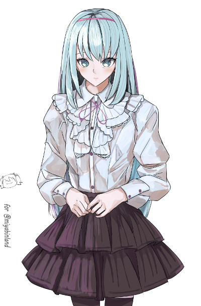

メインログ / 雑談ログ
関連作：「死の運命と赤い糸」
キャラシート
PC1：レナ・エーデルシュタイン (キャラシート) PL：めいPC2：アレン・ガステール (キャラシート) PL：紫閃
PC3：鳴海月 (キャラシート) PL：LISP
PC4：天津秤 (キャラシート) PL：がぶらす
目次
■オープニングフェイズ01 分かたれた少女
02 欠け月
03 獣使い
04 彼女の見立て
■ミドルフェイズ
05 合流
06 情報収集
07 心中
08 孤月
09 欠け月と獣使い
プリプレイ
GM : では始めていきます～！自己紹介からどうぞ！
レナ : はい！
■PC1：レナ・エーデルシュタイン
ロイス:ハッピー・バースデー 推奨感情:好奇心/不安
カヴァー/ワークス:指定無し/UGN関係者であること
あなたはUGN職員を襲撃していた"アン・バースデー"深月藍歌と交戦していた。
あと一歩で彼女を仕留められようとしたその時、彼女は遠距離から注射器を打ち込まれ、苦しみながら路地裏に引き下がって行った。
だが彼女が裏路地にしかし姿を消したその数十秒後、裏路地から飛び出して来た少女があなたに助けを求めてきたのだった。
レナ : レナ・エーデルシュタイン、コードネームは賢者の宝石。FHのせいで全身が賢者の石で出来たレネゲイドビーイングに変えられたUGNエージェントです。
レナ : 見た目は金髪ロング碧眼ドイツ人で、元モデルなので顔やスタイルがよろしいです。
レナ : シンドロームはモルフェウス/エンジェルハイロゥの射撃型。自分の体から零れた宝石を弾丸にして撃ちます！
レナ : 以上で！
GM : サンキューレナさま！では次いける人！
■PC2：アレン・ガステール
ロイス:アン・バース 推奨感情:執着/敵愾心
カヴァー/ワークス:指定無し/FH関係者であること
束の間の休日を過ごしていたりいなかったりしていたアナタに声がかけられる。
彼女が言うには、FHに入る為に近くのセルまで案内して欲しいとのことだ。
ドライでどこか冷めた雰囲気をしている彼女が何故FHに入りたいのかは不明だが、ひとまず彼女を連れて行くことにした。
アレン・ガステール : アレン・ガステール、オーヴァードの肉を解体して食肉として売ることを生業とするFHエージェントの英国人カニバリストです。
アレン・ガステール : 身長190cm、白髪、金色の瞳、土気色の顔に右目の周囲に火傷跡のある少し不気味な風貌のお兄さんです。今は火傷跡のある目の方に眼帯をしてます。
アレン・ガステール : シンドロームはサラマンダー/モルフェウス。バラキエルを振り回す白兵回避両立型です。
アレン・ガステール : 悪い子は解体して食べます、冗談です。
GM : 長身英国紳士のお兄さん、ヨロシクオネガイシマス…🍖 では次のPC！
■PC3：鳴海月
ロイス:"ビーストテイマー" 推奨感情:傾倒/嫌悪
カヴァー/ワークス:指定無し/指定無し
最近、オーヴァードを見境なく襲撃する事件がN市では多発している。
この事件の襲撃者は"ビーストテイマー"と名乗る元FHの女だ。
しかし彼女が何故オーヴァードを襲っているのか理由は不明であり、意図が読めない。
そして"ビーストテイマー"のアジトを暴いたアナタはそこへ乗り込むこととなった。
鳴海 月 : 凝固した血のような赤と黒に統一されたドレスを身にまとい、二股に分かれた特徴的な帽子を被った少女が、操り人形のようにぎこちなく一礼する。
鳴海 月 : 「この道化を舞台に上げようだなんて、なかなか酔狂な客も居たものなのだ」
鳴海 月 : 「私の名前は鳴海月。上から読んでもナルミルナ、下から読んでもナルミルナ。覚えやすいから覚えていくといいのだ」
鳴海 月 : 「職業は……あちこちのサーカスを渡り歩いている、しがない道化師なのだ。そっちの世界では"愚者(ザ・フール)"とか"マスターアルカナム"とか呼ばれているのだ」
鳴海 月 : 「でも、私のことをそう呼ぶ奴は、たいていヤバい仕事を持ってくるか……私の首を狙ってるかのどちらかなのだ」
鳴海 月 : くるりと身体を回転させ、スカートが舞うと、その下に隠された二振りの暗器が鈍く光を反射した。
鳴海 月 : 「さて、君はどちらなのだ？」
鳴海 月 : 謎のFHチルドレン、鳴海月(なるみ・るな)、コードネームは”愚者(ザ・フール)”！ピエロなウロボロスとエンジェルハイロゥのクロスブリードなのだ
鳴海 月 : FHの元実験体でいろいろあって施設から脱走してきたまさかの欲望：逃避持ち
鳴海 月 : データは最強の一振りでキーンナイフを2本振り回すオーソドックスなアサシンだ。申し訳程度に支援もできるよ。仲良くしてね！
鳴海 月 : 悩みがなさそうな生き方してるけど幸せとは何か？自由とは何か？そんなことを考えている複雑なお年頃です。
GM : じつは悩んでるなるなちゃん…ありがとう！最後は天津社長！
天津 秤 : あい！
■PC4：天津秤
ロイス:"プランナー"都築京香 推奨感情:尽力/敵愾心
カヴァー/ワークス:指定無し/指定無し
ある日アナタの元に"プランナー"都築京香が訪れる。
巷を騒がせているオーヴァード襲撃事件、この事件の裏にはとてつもない存在が糸を引いていると言う。
この事件を解決するためにはUGN・FH両組織が手を組む必要があるかもしれないとも。
都築京香自身も最大限協力すると宣言し、アナタの元から立ち去っていった。
天津 秤 :
天津秤。コードネームは【審問官（リブラ・オーディター）】。
紀元前4000年頃から生きる天秤のレネゲイドビーイング。
表の顔は医療器具・製薬会社を束ねるメディアの露出も多い年齢・性別不詳のカリスマ社長！
天津 秤 : 「おはよう、そして初めまして。君が…オーヴァード枠として入社した新入社員君だね？私が、天津コーポレーション代表取締役の天津秤だ。」
天津 秤 : 「そちらの世界では【審問官（リブラ・オーディター）】の名で通っているよ。名前負けも良いところだけどね。」
天津 秤 : 「現在、オーヴァードの世界には大きく3つの勢力が存在する。UGN、FH、ゼノス。この3つの組織を俯瞰し、バランスを見極め、その上で人類の発展に必要不可欠な医療技術の進歩を促す。」
天津 秤 : 「それが私…ひいてはこの会社の、秘された目的だ。一緒に頑張っていこうね。」
天津 秤 : 以上！
GM : 素晴らしい思想ですわね…ありがとうありがとう！
メインプレイ
シーン1 分かたれた少女
GM : 登場キャラはレナ様！
レナ : 1d10+37 (1D10+37) ＞ 9[9]+37 ＞ 46
GM : では導入！
街
GM : 時間は夕暮れ時の街中、あなたはUGN職員の一人を少し離れた距離から追跡していた。
GM : それは誕生日のUGN職員を襲撃するというFHエージェント、"アン・バースデー"深月藍歌が現れることを踏んでのことだ。
GM : そしてそのUGN職員が人気の少ない道に入り込むと、UGN職員の前に彼女が姿を現した。

レナ : 「……！」 物陰からそちらを見ている
深月藍歌 :
「アンハッピバースデートゥユー……はあ、なんか出てくるのは知ってたって顔ね。」
職員の前で溜息をつく
深月藍歌 :
「まあいいわ、あんたが苦しむ様を見られればそれで良いから…」
青白い電流を迸らせながら彼に近づいていく…
レナ : その瞬間、宝石の弾丸が飛んでくる！職員を守るように放たれた宝石に、アン・バースデーは足を止めざるをえない。
深月藍歌 :
「っ！…来たわね、"賢者の宝石"……」
弾丸が放たれた場所に目をやる
レナ : 「逃げて……！こいつの相手はわたしがするから」 銃口をアン・バースデーに向けながら、職員の前に出る
UGN職員 :
「た、助かる！」
そうしてこの場から逃げ去っていきます
深月藍歌 : 「ふんっ……こんにちは、"賢者の宝石"…いつも精が出るわね？」
レナ : 「お前がいつまでも人の誕生日を呪うのをやめないからだ」 職員が逃げたのを確認しつつ
深月藍歌 :
「あらごめんなさい？でも私の趣味だから、当分やめるつもりはないわ」
手をひらひらと振って茶化す
レナ : 「だろうな」 まつ毛を伏せて
レナ : 「……だが、お前が本当にやめるつもりが無いのなら、覚悟はしてもらおうか」
レナ : 「アン・バースデー……。もうこれで最後にしよう。お前は、ここでわたしが討滅する」
深月藍歌 :
「そのセリフも聞き飽きたわ……。ええ、あんたこそ…今日で終わりにしてあげるっ！」
迸る電流を解き放ち、あなたの周りに巻き散らす
レナ : 「……っ！！」 咄嗟に後ろに跳び、電流を直撃寸前のところで避けつつ
レナ : 金色の髪から零れ落ちた宝石を銃に装填。色鮮やかやな弾丸をアン・バースデーに次々に発射する！
深月藍歌 : 「それも見飽きたわ…！」警棒で弾丸を弾き、徐々に距離を詰めていく
レナ : 「もう何度もやってるからな……っ！！」
深月藍歌 :
「それもそう…ねっ！」
いつの間にかあなたの眼前に迫っていた"アン・バースデー"が青白き一閃を繰り出す
レナ : 「……！」 距離を詰めて放たれたその一閃を回避することは出来ない。青い雷の一撃はレナを捉え……
レナ : 「……だったら、そうだな」
レナ : ……たかに見えた、が。アン・バースデーの警棒は、レナの右腕で防がれてしまっている。
深月藍歌 : 「なっ…！？」渾身の一撃を塞がれ、動揺を見せる
レナ : それは透明の宝石と化した腕だ。強固なダイヤモンドでダメージを軽減されている！
レナ : 「これなら……まだお前にも見せたことが無いだろう……！！」
レナ : そのまま宝石の腕が光り輝く。強烈な熱波と共に、レナの腕から虹色に煌く光線がアン・バースデーへと放たれた！
深月藍歌 :
「───ッ！！」
そのカウンターを予期できなかった彼女はその光線をまともに食らい、衝撃で吹き飛ぶ
深月藍歌 :
「う、ぐ……」
大きく体勢を崩し、身体を起こそうとする
レナ : 「…………」 負荷のかかった右腕をだらりと下げながら、銃を左手で構えて近付く
レナ : 「……これでもう、決着だ。アン・バースデー」 相手を見下ろしながら銃口を突き付ける
深月藍歌 :
「……っ、そう…ね……あんたの手で終わらせられるなんて、本望でしょうね……」
微かな笑みを浮かべる
深月藍歌 :
「……どうしたの、早く引き金を引きなさいよ。もう終わりなんでしょ？」
悟ったような表情であなたを見上げる
レナ : 「……あぁ。言われるまでもない……！」
レナ : レナの足下から、周囲の地面が宝石に変わっていく。それは賢者の石の力を解放する合図だった。
レナ : アン・バースデーに確実にとどめを刺すために。長く続いていた因縁の戦いに終止符を打つために。
レナ : レナ・エーデルシュタインは必殺の一撃を放とうとする。
レナ : 「…………」
レナ : ……が、いつまで経っても弾丸は発射されなかった。すでに攻撃のチャージは済んでいるというのに。
レナ : 「………………っ」 そこから動き出すことが出来ず、青く煌く宝石の瞳にアン・バースデーを映したまま
GM : あなたが躊躇しているその隙を狙われたのか、『パシュッ』と何かを撃ちだした様な音が響く。
深月藍歌 :
「ぁぐっ…！？」
どうやら狙いは"アン・バースデー"だったようで、彼女の首元に小型注射器が刺さっている。
レナ : 「……えっ」
レナ : 「な、何……っ」 突然のことに驚き、その拍子にチャージした賢者の石の力は消えてしまう
深月藍歌 :
「こっちが…聞きたい、わよ……っ」
首元の注射を引っこ抜き、ふらふらと立ち上がる
深月藍歌 :
「ハァ…ハァ…、チッ……水を差された、わね…」
あなたと距離を取る
レナ : 「他のエージェント、か……？いや、でも誰かが来るなんて……」
レナ : 「……！ま、待て、アン・バースデー……！！」 周囲を警戒して距離を取られていることに気付くのが遅れる
深月藍歌 :
「勝負は、お預けよ…！次、あったら……容赦しないから……」
怪しい足取りのまま、彼女は裏路地へと消えていきます
レナ : 「……っ、逃げるな……！次なんて……次なんて、無いんだ……！！」 自分に言い聞かせるように叫び、追いかけようとするが
レナ : 何故かその足は動かない。追跡しようと思っても、一歩も踏み出すことが出来なかった。
レナ : 「…………」
レナ : 「（恐れている、のか……。アン・バースデーを……。あいつを殺すことを……）」
レナ : 「……藍歌……わたしは……」 小さく呟く
GM : あなたがそこで足踏みしていると、"アン・バースデー"の入っていった路地裏から小さな人影が飛び出してきた。
レナ : 「っ！」 気配を感じ、すぐに顔をあげてそちらを見る

ハッピー・バースデー :
「レ……そ、そこのお姉さん！こっち、こっちに来て！早く！」
そこには身長は140cm程度だろうか、路地裏には似合わないフリルをあしらった服装の少女がいた
レナ : 「……！？だ、誰……だ……？」
ハッピー・バースデー : 「私にも何だかよくわからないから！お願い、早く！」あなたを顔を見上げて、路地裏に引っ張っていこうとする
レナ : 「ちょ、ちょっと……！」
レナ : 「（敵意は……感じない？今は状況を確認するのが優先か……？）」
レナ : 困惑しながらもそのまま引っ張られて路地裏についていこう。
路地裏
GM : では少女に急かされるまま裏路地へ入ると、そこには2つの人影があった
GM : 薄暗くて識別はしづらいが、1つは傷つき倒れた"アン・バースデー"と思われるもの、もう1つは獣のような爪を今にも倒れた彼女に振り下ろそうとするものであった。
レナ : 「……っ！？止まれ！！」 咄嗟に銃を構え、爪を振りかざす者に叫ぶ。それでも止まらないようなら躊躇なく引き金を絞ろう
GM :
「チッ…！」
あなたの存在に気付いた影は素早く飛び上がり、路地裏の壁を蹴ってその場から逃げ去ります。
ハッピー・バースデー :
「も、もう行った…？」
あなたの背中に隠れている
レナ : 「……えぇ。もういないわ」 安心し、銃を降ろす
ハッピー・バースデー : 「良かった……あっ、あっ…引っ付いてごめんなさい…っ」少し距離を取る
レナ : 「いえ……そんなの構わないわ。それより、あなたは？どうしてアン・バースデーと一緒に……？」
ハッピー・バースデー :
「えっと、それは…その……んんん……」
口をまごまごさせて目を伏せている
ハッピー・バースデー :
「あっ、それよりあの…そこに倒れてる人は大丈夫……？」
倒れているアン・バースデーを指して
レナ : 「……？そうね、アン・バースデー」 答えない相手に少し訝し気だが、すぐに指差された方を見て
レナ : 「……おい、アン・バースデー。何を倒れている……逃げるんじゃなかったのか」 近付いていこう
深月藍歌 :
「……ぅ……」
彼女の元へ近づくと、身体は噛み傷と裂傷だらけで、胸部からは血が滴っていた。
レナ : 「やられたのか、今の相手に……。情けないな」
GM :
しかしあなたは違和感を感じる、この程度の傷ならオーヴァードの治癒力でなんともなるはずだ。
だが彼女の傷は一向に癒える兆しがないのだ。
レナ : 「……おかしい」 違和感に気付き
GM : その傷が治らないならばかなりの重症だ。胸部の出血もひどく、このままでは命を落としかねない。
レナ : 「おい……！どういうことだ……！」
レナ : 「この程度の傷、お前ならすぐに治るだろう……！アン・バースデー……！？」 傍で屈み、アンバちゃんを抱き寄せ覗き込む
深月藍歌 :
「ハァ…ハァ…」
気絶してしまっているのか、呼びかけに応えが返って来ない
ハッピー・バースデー : 「あの…あの…！ち、近くに治療できる所とか…」
レナ : 「……っ、ある、が……」
レナ : 「…………」 目をぎゅっと瞑り、一瞬迷った後
レナ : 自分の服の袖を引き裂いて千切り、胸部の傷に巻いて血を止めようと応急処置をする。
レナ : 「いいか、アン・バースデー……別にお前を助けようというわけじゃない……」
レナ : 「お前の傷が治らない状態について、詳しく知りたい……さっきの謎の敵の攻撃が関係しているかもしれないからな……」
レナ : 「今ここで死なれたら困るだけ……それだけだ……っ」 処置を終え
レナ : アンバちゃんを抱きかかえ、立ち上がる。
レナ : 「この人をちゃんと治療できる場所まで連れて行くわ」
ハッピー・バースデー : 「う、うん」
レナ : 「あなた、ついてきてもらってもいいかしら？さっきの状況について、後でちゃんと聞かせてもらいたいの」
ハッピー・バースデー : 「……わ、わかった。信じてもらえないかもしれないけど、ちゃんと話す…」こくり頷いて
レナ : 「…………」 少女を見つめて
レナ : 「本当のことをありのままに教えてくれるなら、ちゃんと信じるわ。……行きましょう、ついてきて！」
ハッピー・バースデー : 「は、はい…！」
レナ : 近くのUGN支部に急いで行きます！
UGN支部
GM : では近くの支部へ……着きました！
GM : 支部の中はなんだかざわめいて忙しそうにしていますが、誰かに話しかければ医務室なり貸してくれます
レナ : 「すみません！重傷者がいて……とにかく、治療をお願いします！」って声かけて貸して貰おう！治療してもらおう！
支部員 :
「またか…そっちが医務室だ、とりあえずベッドに寝かせておいてくれ！」
支部のメンバーが指で示します
レナ : 「はい……！」
レナ : 言われた通り医務室に行ってベッドに寝かせる！
GM : 少しすると治療に長けたエージェントが怪我の治療をしてくれますね。
GM : そしてアン・バースデーの治療が終わった後で、ここの支部長さんがあなたの元へ訪れます。
レナ : 「……よかった」 治療し終わったアンバちゃんを見て小さく呟いたりしてた
支部長 :
「“賢者の宝石”さん、ちょっとお話が……」
ドアをノックした後、顔を覗きこませて
レナ : 「はい……！大丈夫です」 そちらを振り向き
支部長 : 「はい、失礼します。そちらの少女は…FHエージェントですね？こちらの少女はわかりませんが……」アン・バースデーと謎の少女を交互に見て
ハッピー・バースデー : 「……」目を泳がせてもじもじ
レナ : 「えぇ、FHエージェント……アン・バースデーです。ですがこの通り、本来の奴なら自力で癒えているはずの傷が治っていなくて……」
レナ : 「交戦していた正体不明のオーヴァードについて何か手掛かりになるかもしれないと思い、ここまで連れてきました」
レナ : 「この子は……その時現場にいた少女なのですが。まだ、名前も聞いていなくて」
ハッピー・バースデー :
「あの……ﾊｯ…ハッピー、バースデー……ハッピー・バースデーって呼んで……」
後半に連れて声が小さくなる
レナ : 「は……ハッピー……バースデー……？」
支部長 : 「コードネームでしょうか…？ここら辺では聞いた覚えはありませんが…」
ハッピー・バースデー :
「あっあっ、あの…お話は……」
顔を真っ赤にして俯く
支部長 :
「おっと、失礼しました…」
「”賢者の宝石”さん、最近オーヴァードが連続して襲撃されている事件をご存知でしょうか？」
レナ : 「（ハッピー・バースデー……偶然なの？アン・バースデーと、似たコードネームなのは……）」
レナ : 「いえ、知りません。最近はアン・バースデーの相手をしていて……教えてもらえますか？」
支部長 : 「はい、この事件は所属している組織関係なくオーヴァードが無差別に襲われている事件のことです。恐らくアン・バースデーもその毒牙にかかったのでしょう。」
支部長 : 「噛み傷や胸の傷、それらが被害者とも一致します。」
支部長 : 「それで、ですね……この事件を解決するための働きかけが先ほど届いたのです。」
支部長 : 「1つは日本支部長の霧谷雄吾さんから、もう1つは……ゼノスの”プランナー”都築京香からなのです……」
レナ : 「日本支部長だけでなく、プランナーからまで……？」
支部長 : 「はい、どっち付かずの彼女ですが今回はこちらへ付いたようです。ゼノスからの使者を送るとも…」
支部長 : 「なので今回はこの働きかけに応じたUGN、FH、ゼノスのエージェント…この三大組織で事件を解決することになるでしょう。」
レナ : 「なるほど……」
レナ : 「（組織に関係なく襲われるオーヴァード、FHとの協力……ゼノスを交えているとはいえ……）」
レナ : 「似ているな……あの時と……」 自分の小指を見て
支部長 : 「…”賢者の宝石”さんは前例がありましたね。あの時はUGNとFHだけでしたが…今回はゼノスも加わります。どうなるか予想もつきません……」
支部長 : 「そして集合地点に選ばれたのが……この支部なのです、近々移転も行いますしバレてもそこまで痛手ではありませんからね。」
レナ : 「そうだったのですね……」
レナ : 「……その今回の任務に、わたしも参加することは出来ますか？」
支部長 : 「ええ、是非とも…！あなたほど心強いエージェントは知りませんからね…！」
レナ : 「ありがとうございます。FHやゼノスについては、少し不安がありますが……」
レナ : 「……アン・バースデーのこともありますから。必ず、この事件を解決してみせます」
支部長 : 「はい、ではお願いします…直にメンバーも集まってくるはずなので、人が揃い次第また声をかけにきますね。」
レナ : 「はい、了解しました」
支部長 : そうして支部長は医務室を出ていきます。
レナ : 「……っと。ハッピー・バースデー、だったわよね？」
ハッピー・バースデー :
「っ、はい…！」
びくっと身体を震わせて
レナ : 「大丈夫よ、そんなに緊張しないで」 少し屈んで、ハピバちゃんと目線を合わせて
レナ : 「自己紹介が遅れてしまったわね。わたしはレナ・エーデルシュタインよ」 安心させるように小さく微笑みかける
ハッピー・バースデー :
「えっと、えっと……はい……」
顔を赤らめ指をいじいじしながら返事をする
レナ : 「ん、よろしくね。……それで、なのだけど」
レナ : 「あなたが知っていることについて、教えてもらっても構わないかしら？」
ハッピー・バースデー : 「知っていることは……その、気づいたら裏路地に居て、爪のやつと狼に襲われて……」
レナ : 「狼？」
ハッピー・バースデー : 「そう、狼……でもきっと普通の狼じゃないと…思う……」
レナ : 「レネゲイドに感染したものかしらね……。わたしが駆けつけた時には見当たらなかったけど、そういうのもいるか……」
レナ : 「他には？その後は何があったの？」
ハッピー・バースデー : 「えっと…その後レナに助けを求めたの…そ、それだけ……」
レナ : 「……え、それだけ？」 信じてくれないかもと言っていたから拍子抜けして
ハッピー・バースデー : 「……ご、ごめんなさい…実は話さなきゃいけない事はたくさんあるんだけど…こ、心の整理がついたら……っ」
レナ : 「そう……。いえ、謝らなくて大丈夫よ」
レナ : 「いきなり知らない場所にいて、オーヴァードに襲われて……怖かったでしょう？」
ハッピー・バースデー : 「ううん…ちょっと怖かったけど、レナがすぐ近くにいる……気がしたから、そんなに怖くなかったよ。」途中で言葉を詰まらせて
レナ : 「……？あぁ、助けを求められそうだと思ったからかしら……」
ハッピー・バースデー : 「う、うん…あとえっと……そのね……」
ハッピー・バースデー : 「わ、私を助けてくれて……あ、ありがと…ぅ……」
ハッピー・バースデー : かっかと頬を染めてそう呟く
レナ : 「……ふふっ。どういたしまして。あなたが無事で良かったわ」 嬉しそうに笑みを零す
ハッピー・バースデー : 「えへ、えへ…」笑い慣れてないのか、ぎこちない笑顔を向ける
レナ : 「（何かしら……まだ分からないことばかりな子だし、何を隠しているかも分からないけれど……きっと、仲良くできそうな気がする）」 ハピバちゃんを見つめて
レナ : 「それじゃあ、心の整理が出来て……わたしに話して大丈夫と思えた時が来たら」
レナ : 「その時に教えてもらうわね。それまで、ゆっくり待っているわ。ハッピー・バースデーさん」 微笑みかけながら、優しく相手の髪を撫でる
ハッピー・バースデー :
「わっ…ぁ……う、うん…！」
潤んだ瞳をあなたに向けて、無垢な少女は穏やかな表情を見せた
GM : かくして三大組織と手を組み、オーヴァード襲撃事件を解決することとなった。
GM : しかし“賢者の宝石”も無垢な少女も、この事件の根の深さを知る由もないのであった。
GM : シーンエンド
シーン2 欠け月
GM : 登場PCはアレンくん！侵蝕ダイスどうぞ！
アレン・ガステール : 1d10+33(1D10+33) ＞ 2[2]+33 ＞ 35
街
アレン・ガステール : アレン・ガステールは休暇を使い、FHの戦闘員としてではなく、“解体屋”としてこの街を訪れていた。
アレン・ガステール : ｢(今日のは中々だったな……まあ、俺が直々に用意した品だ、当然と言えば当然だが)｣
アレン・ガステール : 上客との“食事会”を済ませたあと、切らしてしまった酒類を買い足そうと繁華街の方へと向かう。
アレン・ガステール : 彼はそれらの用事を済ませてすぐに東雲へと戻るつもりでいた。
アレン・ガステール : ｢(しかし、UGNの野郎共を追い返してからはまたとんと暇になっちまって……)｣
アレン・ガステール :
｢…………足りねぇな｣
そうポツリと呟くと、右の手首についたブレスレットがそれに答えるようにシャラリ……と音を立てて揺れた。
アレン・ガステール : 白い息を小さく吐き出すとそのまま足早に歩みを進めていく。
GM : ではそんなあなたの背後から、随分と冷ややかと思わせる声がかけられます。
アン・バース : 「ねえ、そこの…あんたFHの人間でしょ？」
アレン・ガステール :
「…………」チラッと後ろを見て
「……さて、何のことだか。俺には嬢ちゃんみたいな知り合いがいた覚えはないが」
アレン・ガステール : 「(FHと知って声をかけてくる。UGNの手合いか、それとも……)」

アン・バース :
「あ…？とぼけないで、どうみてもあんた…アレン・ガステールでしょ？」
チラリと振り返ると、パーカーのポケットに手を突っ込み冷めた視線を向ける女性がそこに立っていた。
アレン・ガステール :
「(……名前まで知ってるときた)」
「ハッ、俺が“FH”のアレン・ガステールだとして……何の用だ？」
アン・バース : 「…始めに言っておくけど、今はあんたと敵対する気とかさらさらないから。そんな殺気立てなくても大丈夫よ。」
アン・バース :
「……用は単純明快よ、私をFHへ入れて欲しい。ただそれだけ。」
少し目を泳がせて
アレン・ガステール :
「あ……？」右手首に伸びかけた手を止めて
「FHに入りたい……だァ？」怪訝な顔をする
アン・バース :
「何か不満でも？」
不機嫌そうな声色で返す
アレン・ガステール :
「…………どう考えても怪しいだろ、アンタ」
「俺のことをどこで知った？」振り返って見下ろすように
アン・バース : 「これでも情報通なの、大体のオーヴァードには目を通してるつもり。誕生日までは把握してるわ。」
アレン・ガステール : 「へぇ……そりゃあ、いい趣味してんな」面倒くさそうな顔をして
アレン・ガステール : 「(いったい何なんだこいつァ……霧の魔女がいたら喜んで連れて帰りそうだが……)」
アレン・ガステール : ｢……ハァ、じゃあついでに教えてやる。俺はFHの戦闘員で勧誘は専門外だ｣ガキは家に帰んなと言わんばかりの顔で
アン・バース :
「スカウトって雰囲気じゃないものね、それを言ったらあの金髪オールバックもアレだけど。」
ふっと鼻を鳴らして
アン・バース : 「なら近くのセルに送ってくれるだけで良いから。ここら辺にないの？」
アレン・ガステール : 「……しつこいな、嬢ちゃん」
アレン・ガステール : 「いや、待て……そうだな」少し黙り込んで
アン・バース : 「何？どこにあるか思い出した？」
アレン・ガステール : 「(こいつは敵対する気は無いと言っている。万が一それがブラフならそのときは……)」
アレン・ガステール : 「……首を落とせば済む話だな」小声でそう独りごちて
アレン・ガステール : 「ああ、この近くにあるFHのセルを知っている。……送っていくだけだからな」肩を竦めて
アン・バース : 「ん、それでいいのよ」
アレン・ガステール : 「偉そうにするな、偉そうに。」
GM : では不審な少女を連れて近くのセルへ。
地下通路
GM : あなたが思い当たったのは地下に拠点をおくセルであった。ひんやりとして薄暗く、ひっそりと活動するにはとても適した場所だ。
GM : そしてこの地下通路には隠された入口があり、そこがセルの出入り口である
アレン・ガステール : 「着いたぞ、ここだ」
アン・バース : 「日陰者にはぴったりな場所ね、嫌いではないわ。」
アン・バース : 「へえ、こんな所に…」
アレン・ガステール : 「ハッ、日陰者か……言ってくれるねぇ」
アレン・ガステール : 「……今更だが、嬢ちゃん。アンタ名前は？」
アン・バース : 「私？私は……」
アン・バース :
「アン、バース……アン・バースよ。」
少しの間の後に答える
アレン・ガステール :
「アン・バース？」
「……そうか」
コードネームか、どちらにしろ本名じゃなさそうだなと考えつつ
アレン・ガステール : 「……アンタ、本当にここでいいんだな？」
アン・バース : 「？何よ、鬼でも棲んでるの？」
アレン・ガステール : 「鬼か……そうだな」アレンは右手首についたブレスレットを外す
アレン・ガステール : 次の瞬間、ダンッという音ともにアン・バースはアレンの腕で乱暴に壁へと縫い止められる。
アン・バース :
「がっ…！？」
咄嗟のことに反応ができない
アレン・ガステール : そして骨で出来た蛇腹状の剣が首に宛てがわれている。
アン・バース : 「……ッ、何…心変わりでも、した…？」
アレン・ガステール : 「……いいや？だが、もう一つ教えてやりたいことがあったのを忘れていてな」
アレン・ガステール : 「アンタは知らずに声をかけたかもしれないが、俺のコードネームは“解体屋”。オーヴァードの肉を解体して商品にする、そして自らもそれを喰らう正真正銘の食人鬼だ」
アレン・ガステール : 「嬢ちゃんが今から入ろうとしている場所はそういった“欲望に正直なやつ”がわんさかいる場所だ……それでもこの先へ進むか？」試すように
アレン・ガステール : 「……引き返すなら、街まで送ってやる」
アン・バース :
「へえ…鬼にも優しさがあるのね…」
「でもそんな施しは受けないわ、私にはやるべきことがある…。それを成すまでは廃れる訳にいかないのよ…っ」
骨の蛇腹剣を素手で少し押し返して
アレン・ガステール :
「……はーん」訳ありか……と心の中で
「ああ、そうかい。そいつァ仕方ないな」
アン・バース : 「…わかってくれた？ならこれ、どかしてくれる？」
アレン・ガステール : 「……おう、悪かったな」そう言ってバラキエルをテクスチャーチェンジで再び鎖状にして手首に巻く
アレン・ガステール : 「詫びと言っちゃなんだが、セルリーダーに話をつけてやるよ」付いてきな、と奥へと進んでいく
アン・バース :
「今の乱暴はそれで帳消しにしてあげるわ」
アレンくんについていく
FHセル アジト
GM : 扉を開けてセルに入ると、最初に目に入って来たのは受付のデスクであった。
GM : しかし受付の係の者はおらず、デスクは空っぽだ。よく見てみれば呼び鈴が設置されている。
アン・バース : 「誰もいないんだけど…」
アレン・ガステール : 「……ああ、そうだな」肩を竦めて
アレン・ガステール : 「おい、邪魔するぞ 誰かいるか！」中まで入り込んで呼び鈴を鳴らす
GM : 呼び鈴を鳴らすと、奥からカシャカシャと金属が擦れ合うような音を立てながら声が聞こえてきます。
??? :
「ゴメンナサーイ チョット セキ ヲ ハズシテマシタ」
合成音声のような声を出しながら近づいてきたのは…
お手伝いロボ :
「ドーモ、ナニカ ゴヨウデ？」
ロボットだった。
アレン・ガステール : 「お、おう」やや面食らった顔をして
アン・バース :
「……ロボットだ。」
同じく面食らって
アレン・ガステール :
「ロボット、だな……」
「あー……新しくFHに入りたいというやつを連れてきた。セルリーダーはいるか？もしくは他にこの手の話がわかるやつでもいい」
お手伝いロボ :
「アー イマスイマス イマ レンラク シマスネ」
頭部に手を当てて、恐らく連絡らしきことを行う
お手伝いロボ : 「ショウグン オトコ ト オンナ ノ オキャクサン ガ キテマスヨ。 トオシテモ イイカンジデ？」
アレン・ガステール : ほんの少しだけ不安を覚えながらも黙って待っている
お手伝いロボ :
「……イマカラ コッチニ クルミタイデス。 ソレジャア ジブン ハ コレデ…」
いそいそと立ち去ろうとする。
GM : ロボットが再び奥の部屋へ入ろうとすると、ガシャンガシャンとけたたましい足音を立てて何かが近づいてくる
アレン・ガステール :
「セルリーダーが来るんだな？」
「おう、ありがとさん」その背中を見送ってから
お手伝いロボ : 「ドーモ…アッ ヤベッ」
アレン・ガステール : 「……あ？」次に聞こえてきた更にうるさい金属音に不安が強くなる
GM :
足音の正体が姿を現す。
それは身長が最低でも2mあり、全身をアーマーで包んだロボット？であった。
ジェネラル :
「このポンコツが！わしはジェネラルと呼べと言ってもわからんのか！お前を物言わぬ掃除用ロボットにしても構わんのだぞ！」
真っ先に受付のロボットへ向かって
アレン・ガステール : 「(話には聞いていたが……こいつァまた……)」自分の背丈より大きいそれを見て
お手伝いロボ : 「オ、オタスケェ…」
ジェネラル :
「次はないと思うことだな…おい、何を突っ立っている！さっさと仕事へ戻れ！」
ロボを蹴り飛ばして部屋へ押し込む
アン・バース : 「…職場環境、最悪じゃない？」
ジェネラル :
「…そして、これはこれはご客人。今回はどういった内容で訪問なさった？ん？」
腰を曲げて
アレン・ガステール : 「…………まあ、話してみれば案外ということもあるさ。合わなければうちのセルにでも来ればいい」小声でアン・バースに伝えて
アン・バース : 「そん時はよろしくするわ…」
アレン・ガステール : 「おう、邪魔してるぞ」かがみ込んだジェネラルを前にして
ジェネラル : 「ふん、大方どこぞのセルから荷物でも届けに来たと思っていたが…そうではないのだろう？」
ジェネラル : 「噂に聞く”解体屋”、アレン・ガステールと…そこの女が何をしに来たか…。当ててやろう、戦闘の支援要請だな？」自信満々に
アレン・ガステール : 「……ああ、俺を知っていたかそいつは光栄だが」頬をかいて
アン・バース :
「…………」
相手するのめんどくさいみたいな顔
アレン・ガステール : 「(俺が連れてきたんじゃあ、そう思われても仕方がないか……)」
アレン・ガステール : 「こっちのがFHに入りたいらしくてな、近かったからこのセルに連れてきた」アン・バースを顎で示して
ジェネラル : 「……ゴホン、そうか。滅多に来るものではないからな、”ディアボロス”がその役を担っておるから失念しておったわ…。」
ジェネラル :
「して…貴様がFHに入りたいという女か…。」
上から見下ろして
アレン・ガステール : 「まあ、そうだろうな。頼めるか？」横でその様子を見ながら
アン・バース :
「そうよ、手続きとかあったかしら」
ジェネラルの顔をジッと見つめる
ジェネラル :
「……よかろう、ではそっちの部屋にいろ。色々と準備がある。」
別の部屋へアン・バースを誘導する
アン・バース : 「？こっちの部屋にいればいいの？」
ジェネラル :
「そうだ、わしは”解体屋”と話がある。」
そうして彼女を部屋に押し込んで扉を閉めます
ジェネラル :
「………面倒なものを持ち込んでくれたな、”解体屋”」
アレンくんに振り返って
アレン・ガステール : 「……おっと、そいつはすまない。だがその様子じゃアンタ何か知っているな？」
ジェネラル : 「知っている訳ではない、だがわしの直感が告げておる。あやつはひどく醜い妄執を抱えておるわ。」
アレン・ガステール : 「へぇ、直感ねぇ」さっき自信満々に外していたが、さて……と考えながら
アレン・ガステール : 「醜い妄執を抱えたやつなんざFHにも五万といると思うが」
アレン・ガステール : 「まあ、アンタが嫌なら他を当たるさ」悪かったな、と
ジェネラル :
「…心の内が顔に出ているぞ”解体屋”。」
「そうだ、五万といる。だがその中でも厄介な一点に向けた妄執だ…標的を捉えれば噛みついて死ぬまで離さぬぞ。」
ジェネラル : 「ふんっ、そこらの河川にでも捨てておくといい…捨て犬のようにな。」
アレン・ガステール : 「おっと、顔に出ていたか。解体は得意だが生憎腹の探り合いは苦手でね」肩を竦めて
アレン・ガステール :
「……アア、しかしそいつは……聞いてるだけで面倒そうだな」ふぅとため息をつく
「まあ、俺は手伝いをすると約束しちまったもんで。捨ておくわけにもいかないんだが」やれやれと首を振って
ジェネラル : 「フハハハ…捨て犬を見捨てられず最後まで世話をするような男には見えぬがな…」
GM : そんな雑談をしていると、先程のお手伝いロボが顔を覗かせている。表情は…よくわからないが何か聞いて欲しそうな雰囲気だ。
お手伝いロボ : 「アノー ジェネラル？」
ジェネラル : 「なんだ！仕事はどうした！」
アレン・ガステール : 「まあ、そう猛るなよ。何か話があるんだろう」
お手伝いロボ : 「ヒエー！ ア アノ ホカノ セル カラ レンラク ガ…」
ジェネラル :
「何？それを早く言わんか！」
こめかみ辺りに手を当て、通信を受け取る
ジェネラル : 「わしだ……何、ふざけているのか！そんなとち狂った任務にわしは出るつもりはない！」
ジェネラル :
「あのどっちつかずのゼノスがいる時点で信用ならぬわ！二度とかけてくるんじゃない！」
怒声を発しながら通信を切断する。
ジェネラル : 「ハァ……回路の寿命が短くなるわい……」
アレン・ガステール : 「(ゼノス絡みの任務、ねぇ……)」きな臭いなと思いつつ
アレン・ガステール : 「くく、セルリーダーも楽じゃないな……で、何の連絡だったんだ？」
ジェネラル : 「無差別にオーヴァードを襲撃する事件を解決するため、UGN・FH・ゼノス合同の任務だそうだ……まったく、わしが割ける人員など……」
ジェネラル : 「……いや、丁度いるではないか。入ったばかりの犬が…」
ジェネラル :
「おい、アン・バース！貴様に任務を与える！」
部屋から引っ張り出して
アン・バース : 「な、何…っ？いきなりすぎない？」
アレン・ガステール : 「おい、まさか……」いよいよ面倒なことになってきたと苦虫をかみ潰したような顔をして
ジェネラル : 「貴様はこれから指定されたUGN支部へ行き、そこに集ったオーヴァード共と仲良く手を取り合い事件を解決するのだ！」
アン・バース : とてつもない嫌悪感を顔に出してはいるが、断れそうにない
アレン・ガステール : 「おいおいおい、いくらなんでもハードルが高すぎやしないか？」
ジェネラル :
「ならばお前も付いていけ”解体屋”、最後まで面倒を見てくれるのであろう？」
クツクツと喉を鳴らす
アレン・ガステール : チッとジェネラルに聞こえるように舌打ちをして「いい性格してんなアンタも」と
ジェネラル :
「フハハハ！骨も肉もないわしがお前を恐れると思うなよ？では精々頑張ってくるのだな！」
高笑いを上げながら、ジェネラルはセルの奥へと消えていきます
アン・バース : 「……ふざけたブリキ野郎ね、新人に任せる仕事じゃないでしょ。」
アレン・ガステール : 「クソッ……あのポンコツ野郎、食うところはないし性格も悪いと来た」盛大なため息をついて
アン・バース :
「煮てもオイルと埃しかでないわよアイツ…」
一緒にため息をついて
アレン・ガステール : 「よせ、考えたくもない」
アレン・ガステール : 「……まあ、いい。俺もここ最近FHの方の仕事はめっきりでな……たまには仕事をしないと勘が鈍る」
アン・バース : 「なら丁度良かったわね。トレーニングとでも思えば気持ちは楽になるかしら？」
アン・バース : 「まっ、どうでもいいわ。さっさとその支部に行きましょう。」
アレン・ガステール : 「ああ、そうだな」そう言って踵を返し出入口の方へと向かう
アレン・ガステール : 「(……それに、“いい商品”とお近づきになれることを考えれば悪い話じゃあない……こいつとの出会いは思わぬ幸運、だったかもしれないな)」アン・バースに背を向けたアレンの顔には背筋の凍るような恐ろしい笑みが浮かべられていた
GM :
ということで紆余曲折あり、食人鬼と謎の少女は指定された支部へと向かうことなった。
しかし腹の内に抱える闇は食人鬼だけではない、少女もまた確固たる執念を抱き、支部へ足を運ぶのであった。
GM : シーンエンド
シーン3 獣使い
GM : 登場PCはるなちゃん！
鳴海 月 : 1d10+45(1D10+45) ＞ 10[10]+45 ＞ 55
GM : 最近N市では、所属組織関係なくオーヴァードが襲撃される事件が多発している。
GM : 襲撃者のコードネームは"ビーストテイマー"、元FHのエージェントだ。
GM : しかし何故彼女がオーヴァードを襲っているのか不明であり、意図が読めない。
GM : そしてFHの情報網から"ビーストテイマー"のアジトを暴いたアナタは単身乗り込むことにした。
"ビーストテイマー" アジト
鳴海 月 : 「本当にこんなところに居るのだ～？」
鳴海 月 : カカツンカカツンとテンポよくヒールでコンクリートを蹴るように歩く
鳴海 月 : くるくると踊るように周りながら、360度死角がないか警戒しながら進む
GM : あなたが小気味の良い足音を響かせていると、それに釣られたのか周りから獣の唸り声を耳にする。
鳴海 月 : 「（…猛獣の匂いがするのだ）」
GM : どうやら数匹の獣に囲まれていたようだ。その獣達が瓦礫の影から姿を現す。
鳴海 月 : 「おっと…ちょっと勇み足が過ぎたようなのだ」
鳴海 月 : 「ま、仕方ないのだ。ここは華麗に脱出ショーと行かせてもらうのだ！」
鳴海 月 : 左右の太腿に隠した暗器を瞬時に構える
GM : あなたが戦闘体制に移ると、高台から笑い声を上げながら一人の少女が姿を現す！
鳴海 月 : 「なのだ？」
ビーストテイマー :
「フッフッフッ、地獄から初めましてデース！ここを見つけるなんて大したもんデスねぇ。名前ぐらい聞いといてあげるデスよ！」
あなたに負けず劣らずなファッションをした少女があなたを見下ろしている。
鳴海 月 : 「なるほど、お前がビーストテイマー…ビンゴ、ってやつなのだ」両手人差し指で指さす
鳴海 月 : 「私の名前は鳴海月。上から読んでもナルミルナ、下から読んでもナルミルナ」
鳴海 月 : 「覚えやすいから冥土でも広めておくと良いのだ」
ビーストテイマー :
「ふんふん、鳴海月デスか。愉快な名前デス……ん……？」
何か思い当たった顔
ビーストテイマー : 「…一応聞きますデスけど、コードネームは何デス？」
鳴海 月 : 「…No. 0『愚者（ザ・フール）』」
鳴海 月 : 「私の居たセルはもう残っていないのだ。その名にもう大した意味はないのだ」
鳴海 月 : 「今は…ただの掃除屋なのだ」ナイフを光らせる
ビーストテイマー :
「”愚者”……ってウゲー！？いわゆる”マスターアルカナム”じゃないデスか！？！？ここここんな大物が釣れるなんて聞いてないデスよ！？」
明らかな動揺を見せる
鳴海 月 : 「（その名で私を呼ぶのは、きっとロクな奴じゃないのだ…！）」眉をひそめる
ビーストテイマー : 「およよよ…！こ、こうなったら当たって砕けろデス…！質には量で対抗するデスよ、ゆけい！ペット共っ！」
GM : 彼女の合図と同時に、あなたと周りで控えていた獣達が一斉に襲いかかってくる！
鳴海 月 : 「さて…君たちに恨みはないけどちょっと寝てて貰うのだ」
鳴海 月 : 頭上に何かを投げる。それは広範囲に光を撒く懐中電灯だ。逆光で月の身体は黒く染まり、影が四方八方に伸びる
鳴海 月 : 次の瞬間、伸びた影から、影と同じ数の月が現れ…目にも止まらぬ刃は獣たちをX字に切りつけた！
GM :
あなたの圧倒的な力の前に獣達は倒れた！
残るは眼前のビーストテイマーのみ、一瞬で手駒を掃討されてかなり焦っているようだ。
鳴海 月 : 左手を胸に当て、獣たちの中心で一礼する。
ビーストテイマー : 「つ、強すぎデース！一体何を食べたらそんな強くなるんデスか！？」
鳴海 月 : 「煮干しなのだ。お前も冥土で毎日食べるといいのだ」
ビーストテイマー : 「ほえ～、覚えておくデス……ってまだ私は死ぬわけにはいかないデスよ！！」
鳴海 月 : 「私は早く依頼を済ませて金を貰いたいのだ。往生際が悪いのだ」
ビーストテイマー :
「こうなったら…私のプライドに関わりますデスけど…！」
「リィィィダァァァァ！！助けてぇぇぇぇ！！」
鳴海 月 : 「それで給料が入ったらかっぱ寿司に行くのだ……リーダー？？」
鳴海 月 : 地面を蹴って、天井の梁をサーカスの鉄棒のようにして掴み、一気にビーストテイマーの場所まで乗り込もうとする
ビーストテイマー : 「ひい～…！せ、せっかく心機一転して甘い汁を啜ろうと思っていたのにぃ…！」
鳴海 月 : 着地とともに両手に暗器を取り、一気にX字に切りつける！
GM : あなたの刃が”ビーストテイマー”を切り裂こうとしたその瞬間、あなたを撃ち抜かんとする銃声が鳴り響く！
鳴海 月 : 「のだっ！」跳躍しながら三回転半、器用に銃弾を避ける
鳴海 月 : 「誰なのだ！？」銃声の方を剥く
ビーストテイマー :
「っ！い、今のうちデース！」
瞬間退場を使い、彼女はこのシーンから逃げ出します。
鳴海 月 : 「あ！！ 待つのだ！！」ナイフを投げるが間一髪間に合わない
GM : 彼女が間一髪逃げおおせると、銃を放ったリーダーと呼ばれた者がどこからか語り掛けてくる。
??? :
「……こんにちは、”愚者”鳴海 月。申し訳ないのですけど、今は彼女がやられる訳にいかないのよね。」
どうやら声の正体は女性のようだ
鳴海 月 : 「お前は…何者なのだ…？」
??? : 「彼女の雇い主、そして……コードウェル博士の理想とする世界へと変える為に働くただのオーヴァードよ。」
鳴海 月 : 「理想の世界……」
鳴海 月 : 「（私には縁遠いものなのだ）」
??? :
「レネゲイドの存在を全世界に知らしめ、その後はコードウェル博士自身が世界を治める……素晴らしい、素晴らしい世界だわ……」
若干熱のこもったセリフを発する
鳴海 月 : 「（こういう奴、研究所にいっぱい居たのだ…）」昔を思い出してる
??? : 「……だから、邪魔しないで貰えるかしら。もうすぐ器選びも終わって、その後は……ええ、私の願い通り……」
鳴海 月 : 「器…？」
??? : 「あなたも十分魅力的だけど、”ビーストテイマー”がしくってしまったから……ええ、諦めます。」
??? :
「それではさようなら、もうすぐ世界は生まれ変わりますよ……フフ、アハハハハ…！」
GM :
笑い声を上げながら、彼女の気配が消えていく。
どうやらこの場から逃げ去ったようだ。
鳴海 月 : 「全然話がわからないのだ…」
鳴海 月 : 「とにかく依頼は失敗してしまったのだな…仕方ない、適当なところにご飯をたかりに行くのだ」
GM : 悲しみに暮れていると、追い打ちをするようにあなたの端末に連絡が入ってきます。なんと依頼主です。
鳴海 月 : 「！」電話を取る
鳴海 月 : 「もしもしなのだ」
依頼主 : 「私だ、”マスターアルカナム”。首尾の方はどうなっている？」
鳴海 月 : 「逃げられたのだ。リーダーとかいう奴の邪魔が入ったのだ…」
依頼主 : 「何？…そうか、お前が失敗するとは珍しいこともあるものだな…。しかし”ビーストテイマー”のバックに付いている者がいるという新しい情報は掴めたな。」
鳴海 月 : 「そうなのだ。とりあえずこの仕事はまだ続けるのだ？」
依頼主 : 「ああ、その事なのだが…少し内容を変更させてもらいたい。」
鳴海 月 : 「のだ？」
依頼主 : 「この事件を巡ってUGN、FH、ゼノスの一部が一時的に協力関係を結ぶことになった。その一部に”愚者”、君も加わってもらいたい。」
鳴海 月 : 「そうなのだ？ 一人でやるよりは楽だし私はかまわないのだが、いきなりいがみ合ってる奴らを集めて大丈夫なのだ？」
依頼主 : 「うむ……この要請に応じるようなヤツは少し癖のある連中だろうが…顔を合わせてすぐ戦闘、ということにはならないだろう…多分。」
鳴海 月 : 「なるほどなのだ。とりあえず了解したのだ」
依頼主 : 「……いや。きっと大丈夫だろう、ゼノスからバランスを象徴するような使者が送られてくるというし、きっとうまく取り合ってくれるはずだ。」
鳴海 月 : 「バランス感覚なら私も自身があるのだ。なんか仲良くできそうなのだ」
依頼主 :
「体幹の話はともかく、了承ということでいいな？集合場所はこのUGN支部だ、頼んだぞ。」
あなたの端末に座標データが送られてくる
鳴海 月 : 「…ということは、UGNの支部に入れるのだ？ あそこは食堂の管理がガバガバだからただ飯にありつけそうなのだ」
鳴海 月 : 鼻歌を歌いながらUGN支部に歩いてこう
GM :
ビーストテイマーとその雇い主の思想、様々な懸念があなたの脳裏をよぎる。
しかし今ある情報では杞憂に過ぎないと思ったあなたは、UGN支部のご飯が美味しいことを願って集合場所に向かうのであった。
GM : シーンエンド
シーン4 彼女の見立て
GM : 登場PCは天津 秤社長！
天津 秤 : 1d10+46(1D10+46) ＞ 3[3]+46 ＞ 49
天津コーポレーション
GM : どんよりとした曇り空の午後、あなたは社長室である人物が訪れるのを待っていた。
GM : その人物とは"プランナー"都築京香、滅多に接触してこない彼女の方からアポイントメントを取ってきたのだ
GM : なんとも言えない不安を胸に抱きながら、あなたは時計を見る。そろそろ約束の時間だ。
大形洋二 :
「…天津社長、今日の午後は都築京香様がいらっしゃる予定です。」
あなたの秘書が午後の予定を説明する。
天津 秤 :
「いやぁ、ふふ。我が社がこうして大いに軌道に乗ってからの接触…ウチが奪われたりしてね。」
書類を眺めながら、冗談めかして言う
大形洋二 : 「そういった物ではないとは思いますが……もしそうだとしたらどうするおつもりです？」
天津 秤 : 「そうだねぇ…彼女のことだ。”そう”するなら、私から反発が出ないように手を回すだろう。」
天津 秤 :
「つまり、私がこうしてふと予想できている時点で、無いということだね。冗談冗談。」
手をひらひらと振る
大形洋二 : 「そうでしょうね。ですが…ただ顔を出しにくる訳ではないでしょうし、心構えはしておいた方がいいでしょう。」
天津 秤 : 「ま、そうだね。彼女も雑談しに来れるほど暇じゃないだろうし…持ち掛けてくる話がウチの方針に背いてないと良いけど。」
天津 秤 : 「会合の間のここらへんの人払いはもうしてくれてる？」
大形洋二 : 「抜かりなく、会合の間は人っこ一人近寄ることはないでしょう。スケジュールもそう組んであります。」メモ帖を軽く叩いて
GM : そうした会話をしていると、大形くんの近くにある電話に着信が入ります。
大形洋二 : 「…はい、社長室…。ええ、そのまま通してください。」
大形洋二 : 「社長、いらっしゃったみたいですよ。」
天津 秤 : 「ん、おっけーい。大形君は…席外すよう言われたら外してもらう感じで」
大形洋二 : 「わかりました…しかし、一体どんな話なのか…」
GM : 大形くんが訝しんでいると、早速社長室のドアがノックされます
大形洋二 : 「！…どうぞ、お入りください。」
GM : ドアが開けられると、そこには一見すると社長室には似つかわしくないと思える少女、”プランナー”都築京香の姿があった。
都築京香 : 「こんにちは、”リブラ・オーディター”。このように直接会うのはいつぶりでしょうか。」
天津 秤 : 「ようこそ天津コーポレーションへ、”プランナー”。そうだねぇ…10年かそこらかな。」
都築京香 : 「ええ、確かその程度だったかと……座ってもよろしいですか？今回の私が訪れた理由について説明させていただきます。」
天津 秤 :
「失礼、こちらへ。大形君、お茶お願い」
着席を促しつつ移動
大形洋二 :
「そう言われると思ってもう淹れてあります。こちらをどうぞ。」
テーブルにお茶が並べられる。
都築京香 :
「ありがとうございます。では……」
お茶に口をつける
都築京香 :
「ふう……”リブラ・オーディター”。あなたはオーヴァード襲撃事件についてご存知でしょうか？」
一息ついたのち、話を切り出す
天津 秤 : 「ああ、噂程度には。表立って人が襲われるような事件じゃないから、詳細はあまり。」
天津 秤 : 「ウチも、抱えてるオーヴァードなんて私入れて二人だし…。」
都築京香 : 「噂程度の知識で大丈夫です。しかし私が懸念しているのはその裏で動く存在についてなのです。」
都築京香 : 「”ビーストテイマー”の存在、これは省いてもいいでしょう。私が目をつけたのは被害者達の似通った傷についてです…」
都築京香 : 「私の杞憂で終わればそれで良い事案なのですが、常に最悪の事態に備えたプランを用意しておかなければなりません…。」
都築京香 : 「その為に”リブラ・オーディター”、私はあなたの力を必要としているのです。」
天津 秤 :
「なるほど。……話が見えてこないけど…具体的には？」
人当たりの良さそうな顔を浮かべてはいるが、懐疑的であることは見て取れる
都築京香 : 「…この事件を調査、解決するためにUGN・FHに対して一時的な協力関係を結ぶように要請をかけました。もちろんゼノスもこれに参加します。」
都築京香 : 「…つまりはあなたにはゼノスの使者としてこの作戦に参加し、組織間のバランスを取って欲しいという事なのです。」
天津 秤 : 目を閉じ、組んでいた膝に手をやって少し考える。
天津 秤 : 「なるほど。君がそう判断したのなら、三組織の協力は必要なことなんだろう。適当な役割も与えてくれているみたいだし…」
都築京香 : 「受けてくださる、ということでよろしいですか？」
天津 秤 :
「もちろん。それが”プラン”に必要なことなら私は喜んで受けよう。元々断る気はあまり無かったしね♪」
微笑んで、手を差し出す
天津 秤 : 「知っての通り、私の願いはヒト、オーヴァード、我々の融和。君の”プラン”は、着地点自体はそうでなくとも、私の夢の一助にもなる」
都築京香 :
「ありがとうございます、期待通りのお返事でしたね。」
あなたの手を握り、感謝の言葉を述べる
都築京香 : 「……ですがお気をつけて、もし私の不安が的中していた場合……世界のバランスが壊れかねないかもしれません。」
都築京香 : 「その為に私は各方面への協力要請、情報収集を続けます。何かあれば私へ直接ご連絡ください。」
天津 秤 : 「世界のバランスとはまた随分と…ふん…連絡手段は何で？」
都築京香 :
「こちらの番号に連絡して頂ければ」
メモ用紙に書かれた番号を渡されます
天津 秤 :
「確かに。………協力してくれる子っていうのは？」
番号を確認した後に細かくして捨てつつ
都築京香 : 「私が知りうる限りではUGNから1人、FHから3人…今のところはこれくらいでしょうか。あなたを含めて5人ですね。もしかしたら増えるかもしれませんが…」
天津 秤 : 「これはまた揉めそうな…柔軟な子だといいんだけど」
都築京香 :
「その為のあなたです。どうか彼らの仲をバランスよく保ってあげてください。」
僅かに微笑む
天津 秤 : 肩をすくめる
都築京香 :
「…では私はこれで失礼します。良い返事が聞けて大変嬉しかったですよ。」
席から立ち上がって
都築京香 :
「……ああ、そうでした。この作戦の集合地点ですが…とあるUGN支部に集まるようです。場所は……」
もろもろ説明されました！
天津 秤 : ほい！
都築京香 : 「それでは、またお会いしましょう。”リブラ・オーディター”、作戦がうまくいくことを願っています。」
天津 秤 :
「お互いに良い結末を迎えられるように尽力しよう、それじゃぁ。」
手を振って社長室から見送ろう
大形洋二 :
「私が外まで送っていきますね。」
大形くんと一緒にプランナーが退出しました。
天津 秤 : 大形と都築の足音が遠くなる。審問官にはあまり似合わない、静寂が訪れる。
天津 秤 : 「天秤は本来、重さを比較するだけのもの。1と3を平らにするなんてとてもとても。」
天津 秤 : 「でも、だからこそ。自我を持つ天秤たる私が、平定してみせようか。」
天津 秤 :
「大形君に仕事投げなきゃ…」
書類をまとめ始めて終わり！
GM : "プランナー"が示す不安の種、それは世界のバランスを崩す程の力を持つという。
GM : しかしそれでもあなたは世の平定を保つために、指定された支部へと向かうのであった。
GM : シーンエンド
シーン5 合流
GM : 登場PCは全員！
レナ : 1d10+46(1D10+46) ＞ 9[9]+46 ＞ 55
アレン・ガステール : 1d10+35(1D10+35) ＞ 6[6]+35 ＞ 41
鳴海 月 : 1d10+55(1D10+55) ＞ 2[2]+55 ＞ 57
天津 秤 : 1d10+49(1D10+49) ＞ 3[3]+49 ＞ 52
UGN支部
GM : あなた達は各々の働きかけにより、この事件を解決するために指定されたUGN支部に集まることとなった。
GM :
前例があるとは言えUGNとFH、更にはゼノスまでもが手を取り合うとは異例な事態だ。
何とも言えない空気感の中、あなた達は支部へと集っていくのであった。
レナ : UGN支部の集合場所に指定された部屋で、レナは適当な椅子に腰かけていた。
レナ : 「……そろそろ来てもおかしくない時間か」
レナ : 脚を組んだまま腕時計を見て呟く。リラックスしているようで、しっかりと警戒しながら扉が開かれるのを待っていた。
ハッピー・バースデー : 「どんな人が来るのかな…」
ハッピー・バースデー : 椅子に座ってそわそわしながら扉とレナを交互に見ている
レナ : 「わたしもまだ聞かされていないから分からないわ。……妙なことを考えている奴じゃないといいんだけれどね」
ハッピー・バースデー : 「いきなり襲ってくる人もいるかもだし……で、でもレナがいるから、きっと大丈夫よね……」
レナ : 「えぇ、大丈夫よ。もし危ないとか、少しでも怖いと感じたらわたしの後ろに隠れるといいわ」
ハッピー・バースデー :
「あ、ありがとう……えへ……」
紅潮した顔を隠すように俯いて指をいじる
レナ : その様子に微笑みかけながら、手の中には≪テクスチャーチェンジ≫で小さな宝石に変化させた銃を握りしめている。いつ何が起こってもすぐに対応できるように……。
アレン・ガステール :
扉の前までアン・バースと共にやって来て
「こんな厄ネタに乗るやつは相当使命感が強いか気が触れているとしか思えないが……さて、何が待ち受けているのやら」
アン・バース : 「私を突き放さないで一緒にくるアンタはどっちなんでしょうね。まあ、厄ネタなのは間違いないわ。」
アレン・ガステール : 「ハッ、俺が使命感で付いてくるような男に見えるか？」挑発するように
アレン・ガステール : 「実は、嬢ちゃんのことを切り刻んでスープに入れるため……だったりしてな」くくと笑って
アン・バース : 「私を殺す気なの？……ふん、私のやりたいことが終わった後なら煮るなり焼くなり好きにすればいいわ、文字通りね。」
アレン・ガステール : からかいがいのないやつだなと肩を竦めて
アレン・ガステール : 「ジェネラルから依頼を受けてきたものだ、入るぞ」そう断って扉を開ける
アン・バース : 「どうも」愛想のない一言と一緒に入室
レナ : 「……！来たな。……FHか」 そちらを見て
アレン・ガステール : 「ほう、こいつァ……」中にいる2人のことを品定めするように眺める
レナ : 「なんだ、来るなりこちらをジロジロと見て……」
アレン・ガステール : 「いいや……なんだ、えらく別嬪な女が待っているものだから部屋を間違えたのかと思ってなぁ？」鋭い歯をチラつかせて笑う
レナ : 「FHに口説かれたところで嬉しくも何ともないな。部屋ならここで合っているが」 立ち上がって
アレン・ガステール : 「まあ、そう邪険にするなよUGNの」
アン・バース :
「………！」
レナのことを視認した瞬間、彼女が険しい顔をした気がする。
レナ : 「……？お前は」 アンちゃんを見て
レナ : 「（何か……アン・バースデーと似ているような、面影を感じるような……気のせいか？）」
アン・バース :
「…いいえ、別に……」
眼を逸らして、ハッピー・バースデーに顔を向ける
ハッピー・バースデー :
「……っ、ど…どうしてここに…」
その視線から逃れるように、レナの後ろへと逃げる
レナ : 「……大丈夫？」 はぴばちゃんを心配そうに
ハッピー・バースデー :
「う、うん…っ」
あなたの背中から顔を覗かせて、アン・バースの方を見つめる
レナ : 「……？そう、無理はしちゃだめよ」 一応後ろにちゃんと隠して
アレン・ガステール : 「……どうした、知り合いでもいたか？」アン・バースに
アン・バース :
「チッ……まあ、ちょっとね……」
殺気の入り混じった嫌悪感を示し、レナとハッピー・バースデーから一番離れた壁に移動し、寄りかかる
鳴海 月 : 扉の向こうからハスキーな高音で上機嫌に歌う声が聞こえてくる。
鳴海 月 : 「サカナサカナサカナ～、サカナ～を食べ～ると～」
鳴海 月 : 「カラダカラダカラダ～、カラダ～にいい～のだ～♪」がちゃりとドアを開ける
鳴海 月 : 「おお、随分賑やかなのだ」一行の様子を見て
レナ : 「…………。なんだ、その歌は」 呆気に取られて
ハッピー・バースデー : 「ご、ご機嫌な人が来たね……」
アレン・ガステール : 「……どうやら、やはり気が触れているやつらばかりらしいな」後ろを振り返り、ルナの姿を確認する
鳴海 月 : 「これは全国のスーパーの鮮魚コーナーで毎日流れてる大ヒットソングなのだ。覚えやすいから覚えておくといいのだ」
レナ : 「いや、そういうことでは……。まあ、いい」
レナ : 「（めると似たようなタイプかもな……）」
アレン・ガステール :
「……ハァ」
「アンタ……ゼノスから来たっていうやつか？」浮世離れしたやつが来たなと思いながら
鳴海 月 : 「ゼノス？ 知らないのだ。私は雇われてここに来ただけなのだ」
アレン・ガステール : 「……ん？違ったか、まあいい」
鳴海 月 : 「お前たちも例の任務のために方々から集まったのだ？ よろしく頼むのだ」
ハッピー・バースデー : 「よ、よろしく……」会釈
レナ : 「じゃあこいつもFHか。……あぁ、そうだ。まだあとゼノスからも来るから、その辺に座っておけ」 適当な椅子やソファを示して
鳴海 月 : 「よろしくなのだ～」どこから見つけてきたのかバランスボールの上に座る
アン・バース :
「………」
ちらりとルナを横目で見てすぐ視線を逸らす
レナ : 「そんなものあったのか……」
アレン・ガステール : 「ああ、そこのと一緒にFHから派遣されてきたものだ」ルナの変わりにソファに腰をかけながら
天津 秤 : その時、ドアをノックする音が響く
天津 秤 :
「失礼、お邪魔するよ。」
中の様子を窺うように、金髪に中性的な顔立ちの人物が入室してくる
鳴海 月 : 「新しい人が来たのだ？」
アレン・ガステール : 「……今度こそゼノスから来たってやつか」顔を上げる
レナ : 「あぁ。……お前は」 秤さんの顔を見て
アレン・ガステール : 「ん？いや、待て。アンタは……」
天津 秤 : 「そうだね。ゼノスの遣い、”リブラ・オーディター”だ。表では天津コーポレーションの代表取締役なんてしているから、もしかしたら私のことを知っている人もいるかもね。」
鳴海 月 : 「だ、だいひょうとりしまりやく…」オウム返し
レナ : 「天津コーポレーション……？あの医療用品の会社の」
ハッピー・バースデー : 「しゃ、社長さんだ…」
アレン・ガステール : 「天津？はーん……アンタがオーヴァードだったなんてな」まじまじと見つめて
レナ : 「まさかあの会社の社長がゼノスの関係者とはな……。オーヴァード……いや、レネゲイドビーイングか？」
鳴海 月 : 「な、なんだか情報化社会に取り残されている気がするのだ！ 私を置いていかないで欲しいのだ！」わたわたしてる
レナ : 「……会社は分かるか？そこの一番偉い人ってことだ」
アレン・ガステール : 「スマホで“天津 秤”って検索してみな、山程そいつの顔写真が出てくるだろうよ」
天津 秤 : 「ありがたいことにいろいろと出させてもらってるからね。簡単に言えば社長だよ。」
鳴海 月 : 「ほええ…社長…めちゃくちゃ偉い人なのだな」
天津 秤 : 「そういうことだね。それと、そう。私はレネゲイドビーイングで間違いないよ。私は『天秤』。今回の作戦の調停役を任された。」
天津 秤 :
「UGNとFHの共同作戦って言うから、多少心配していたんだけど…」
全員を見渡す
天津 秤 :
「うんうん、とりあえず殺し合いなんかに発展してなくて何より。」
笑顔でうなずく
レナ : 「調停役、か……ゼノスのレネゲイドビーイングに調停される筋合いは無いが……」
アレン・ガステール :
「へぇ、天秤ねぇ……」
「ああ、ひとまずは……な」これからがどうかは知らないが、と付け加えて
鳴海 月 : 「うんうん、第三者の調停は大事なのだ」頷いてる
レナ : 「（分かっていっているのか……？）」 ルナちゃんを訝し気に見て
鳴海 月 : 「？」ニコニコしながらバランスボール転がして動いている
レナ : 「何でもない。……これで全員になるのか、協力者は」 もう誰も来ないことを確認して
アレン・ガステール :
「しかし、ゼノスもこんな大物を寄越すとは……いったい何をさせられるやら」やれやれと
「そうらしいな」
天津 秤 : 「私もこれで全員と聞いてるんだけど…そうしたら、皆のことも教えてほしいね。」
レナ : 「そうだな。最低限でも自己紹介は必要だろう」
鳴海 月 : 「そういえばお互いの名前も知らないのだ」
アレン・ガステール : 「まあ、いきなり行けと言われただけだからな」
レナ : 「じゃあ、わたしから」
レナ : 「わたしはUGNのエージェント、レナ・エーデルシュタイン。コードネームは“賢者の宝石”だ」
レナ : 「名前でもコードネームでもどちらでも呼びたいように呼ぶといい。名前を隠す意味もわたしにはないからな」
ハッピー・バースデー :
「わ、私は……ハッピー、バースデー……」
ごにょごにょと小声で
レナ : 「それと、最初に言っておくが」
レナ : 「わたしははっきり言って、FHやゼノスと協力するこんな作戦はどうかと思っている」
天津 秤 : 「ほう」
アレン・ガステール : 「……」黙って聞いている
鳴海 月 : 「…」
レナ : 「だが、日本支部長がそうせざるを得ないと判断したのなら仕方がない」
レナ : 「わたしに出来ることは、お前達と共に迅速にこの事件を解決するだけだ」
レナ : 「お前達とはちゃんと協力しよう。……ただし、UGNの者に危害を加えたり、何かよからぬことを企んでも無い限りは、だ。」
レナ : 「お前達が妙な真似をしたらその時点で協力関係は終わりだ。躊躇なく討たせてもらう」
鳴海 月 : 「なるほどなのだ。私の目的も敵の討伐だけだから安心するといいのだ」
レナ : 「本当にそうなら安心だがな。疑っているわけではないが、一応、警戒はさせてもらう」
鳴海 月 : 「構わないのだ、逆に初対面で知らない相手に手札フルオープンしてくるようなヤバい手合いじゃなくてよかったのだ」
アレン・ガステール : 「くく……ハッハッハ！そいつァ、怖いな……ああ、怖い怖い……」愉快そうに笑う
天津 秤 : 「適度な緊張感が保たれているようで結構結構。頼りにしてるよ。」
レナ : 「……まあ、言っておかないといけないのはそんなところだ」 笑ってるアレンくんに少しムッとしながら
レナ : 「能力や戦闘方法については、話したところで無意味だろう。連携を取れるわけでもないしな」
鳴海 月 : 「オッケー、適当に動いてくれたらこっちで合わせるのだ」
レナ : 「それでいい」
アレン・ガステール :
「そう気を悪くするな」ムッとした顔に気付いて手をヒラヒラと振って
「まあ、その辺は戦闘になれば嫌でもわかるだろう」
レナ : 「……ったく。もういい、お前の番だ。早く話せ」
アレン・ガステール :
ああ、と短く返事をして
「俺は“解体屋”アレン・ガステール、FHに所属する戦闘員で……」
アレン・ガステール : 「本職はオーヴァードの食肉解体処理業だ、そちらの方面では少しは名を知られている」
天津 秤 : 「？レネゲイドビーイングとかを食べるのかい？」
レナ : 「……何？今お前、何て言った……オーヴァードの食肉解体、だと……？」
鳴海 月 : 「食…肉…？？？」
ハッピー・バースデー : その意味に気づいて体を震わせている
アレン・ガステール : 「いいや、レネゲイドビーイングなんて食べられたもんじゃあないだろう？もちろん人間の、オーヴァードの肉さ……」ニヤリと笑って
天津 秤 : 「なかなか強烈だねぇ…」
アレン・ガステール : 「くく……あの有名な天津社長にお褒め頂き光栄だ」
鳴海 月 : 「…」冷や汗をかいている
レナ : 「…………」 流石に動揺が隠せないのか、アレンくんをまじまじと見て
レナ : 「……確認するが、わたしがさっき言った言葉は覚えているだろうな、解体屋。妙な真似はするなと」
アレン・ガステール : 「ああ、もちろんだ。俺はここに協力をしに来たわけだからな」フッと笑って
アレン・ガステール : 「ただ……」
アレン・ガステール : 「今回俺は上から何も言われちゃあいない。だから、もしも標的が人間のオーヴァードであって、それを殺すなと言われない限りは……そいつァ、俺がもらっていくつもりでいるし、俺はそいつを正当な報酬だと思っている」
アレン・ガステール :
「……それが気に入らないなら、討伐でもなんでも好きにすればいい」
「もちろん、任務の終わったあとでだがな」
と笑う
レナ : 「……そうだな。わたしからああ言った以上、わたしも任務の間はお前達に危害を加えるつもりはない」
レナ : 「だが、そこまでべらべらとわたしの前でしゃべった以上……。全てが終わった後、わたしに討滅される覚悟はしておくことだ」 アレンくんを睨みつけて
鳴海 月 : 「わ、私は食べても美味しくないのだ…間違って齧ったりしないでほしいのだ」
天津 秤 : 「私としては…そうだね、それが、3組織のバランスを著しく欠くようなら止めなければだけど…あまり口出しはしないでおこう。」
天津 秤 : 「でも、肌とかには悪いと思うよ。余計なお世話かもしれないケド」
アレン・ガステール : 「ハハ、俺にだって理性はある。いきなり協力者を頭から食べたりしないさ……」
アン・バース : 「そうね、意外と理性はあるものね。」
アレン・ガステール :
「ほら、アイツもああ言っているだろう？」
「そうだ、嬢ちゃんも名前くらい名乗っておけよ」と壁際のアン・バースに
アン・バース :
「あ…？私は……私はアン・バース、覚えておかなくても良いわよ。」
悪態をついた後、またそっぽを向く
レナ : 「…………。え？アン・バース？」 アレンくんを警戒してたけど、名前を聞いてハッとしてアンちゃんを見る
天津 秤 : 「おや、知り合いかい？」
鳴海 月 : 「よろしくなのだ。そっちは知り合いなのだ？」
アレン・ガステール : なるほど、そこと知り合いだったか……と思いながら
レナ : 「何だ……アン・バースって……そのコードネームは……」
レナ : 「いや、知り合い……ではないと思っていたが……」
アン・バース :
「……ふんっ、どうだって良いでしょ…。さっさと次の紹介に移ったら？あんたで最後でしょ？」
レナにしてみれば既視感のある態度を取りながら、ルナの方を見る
レナ : 「待て、どうでもよくない……！」
レナ : 「最初見た時にも、どこか面影があると思ったんだ……アン・バースデーにどこか似ていると……っ」
鳴海 月 : 「い、いいのだ？ よくないのだ？」バランスボールの上で中腰になりながら小声で
レナ : 「すまない、少し待ってくれ」 ルナちゃんに
鳴海 月 : 「わかったのだ」そのまま座る
アン・バース : アン・バースデーの名に一瞬反応して、再びレナに顔を向ける
アン・バース :
「……で？似てるからって何なの？」
険しく、若干憎しみの籠ったような目つきで睨む
レナ : 「……っ」 アンバちゃんでは見たことの無い目つきに少し怯んで
レナ : 「似ていたら……気になるだろう。コードネームもほぼ同じで、しかもFHで……」
レナ : 「お前、アン・バースデーと何か関係があるのか？一体何者だ……」
アン・バース :
「……残念だけど、私はFHに入ったばっかりだから。 でも…どうしても知りたいって言うなら……いえ、今は良いわ…。」
言葉を濁す
レナ : 「…………」 アンちゃんをジッと見つめて
レナ : 「……分かった。気になるが……それならまた後でにしよう」
レナ : 「アン・バースデーというFHエージェントと似ていたから、少し驚いて……。待たせて悪かったな、お前の番だ」 ルナちゃんに
アン・バース :
「………」
軽くため息をついた後、物憂げな顔でまたそっぽを向く
鳴海 月 : 「疑問を解消するのはいいことなのだ。じゃあ改めて私の番なのだ」
鳴海 月 : 「私の名前は鳴海月。上から読んでもナルミルナ、下から読んでもナルミルナ。覚えやすいけど長いと思ったら単にルナで良いのだ」
アレン・ガステール : 「ナルミルナ、ね……アンタ コードネームは？」
天津 秤 : 「ルナちゃんね、なるほど」
鳴海 月 : 「FHに居たときは『愚者(ザ・フール)』って呼ばれていたのだ。タロットの愚者なのだ」
鳴海 月 : 「ただ、FHから逃げ出して長いから今も籍があるかはわからないのだ」
レナ : 「え？逃げ出した？じゃあ、今はFHのエージェントでは無いのか？」
鳴海 月 : 「……」
天津 秤 : 「あれ、私もFHって聞いてたんだけど」
鳴海 月 : 「そうありたいと思っているけど、なかなかうまくは行かないようなのだ。少なくとも今の仕事はFHから受けたものなのだ」少し悲しそうな顔で笑う
レナ : 「……。そうか……」
天津 秤 : 「なるほどねぇ。確かに、ああいった組織を抜け出すのは簡単じゃないだろう。もししっかり抜け出せたら、その時は進路の相談にでも乗ろうか？」
鳴海 月 : 「難しいことを考えるのは苦手なのだ…でもそう言ってくれるなら考えてみるのだ」
アレン・ガステール :
「……なるほどな」ルナの顔を見て少し言葉を詰まらせて
「ルナと呼べばいいんだな？」
鳴海 月 : 「どちらでも構わないのだ。『愚者(ザ・フール)』って呼び名はピエロらしくて気に入っているのだ」
レナ : 「なんだ、気に入ってるのか……？もう呼ばれたくもない名なのかと思ったら」
アレン・ガステール : 「ハハ……ああ、俺もそう思ったが？」
レナ : 「まあ、どちらでも良くて気に入ってるのなら愚者と呼ばせてもらおう」
鳴海 月 : 「この名前をくれた奴は気のいいひとだったのだ。すべてが悪い思い出ってわけでもないのだ」
天津 秤 : 「それならば何よりだ。」
レナ : 「お前の事情はまだよく分からないが、とりあえず今は目の前の任務だ」
鳴海 月 : 「なのだ！」
天津 秤 : 「ああ、ちょっと良いだろうか。」
レナ : 「よし。……なんだ？」
アレン・ガステール : 「どうした？」
天津 秤 : 「大した疑問というものでもないんだけど…”ハッピー・バースデー”。君もこの作戦に？」
天津 秤 : 「私は事前に、UGNから一人、FHから三人と聞いているんだけど…ああ、参加するならそれ自体に異論は無いよ。どういった経緯かだけ聞いておきたかったんだ。」
ハッピー・バースデー : 「え、えっと……その…わ、私にできること、なら……」
ハッピー・バースデー :
「わ、私はレナに助けてもらって……その、成生でここにいるけど……」
天津社長の顔色を伺うようにびくびくとしている
レナ : 「ハッピー・バースデー。よければわたしから説明するけれど……話しても大丈夫かしら？」 優しく覗き込んで
鳴海 月 : 「（な、なんか急にキャラ変わったのだ？）」
天津 秤 : 「（態度に出やすいんだねえ）」
アレン・ガステール : 「(誰が敵で誰が味方か……こんなに分かりやすいこともそうないな)」
ハッピー・バースデー : 「あ、ありがとう…でも……迷惑に、ならない…？」
レナ : 「迷惑だなんて思わないわ。あまり人と話すのは得意じゃないでしょう？」
ハッピー・バースデー : 「うん……ご、ごめんなさい……」
レナ : 「大丈夫。こういう時はごめんなさいじゃなくて、ありがとう、だけでいいのよ」
レナ : ハピバちゃんに小さく笑いかけてから、他の皆の方を向いて
レナ : 「彼女はハッピー・バースデー。ついさっき、UGNが保護したオーヴァードだ」
レナ : 「彼女も襲撃事件の被害者だ。アン・バースデーというFHエージェントが襲撃事件に巻き込まれた現場に、気付いたら居合わせていたらしい」
レナ : 「今回の作戦のメンバーというわけではないが、被害に遭った者として何か気付けることもあると思って……この場にいてもらっている」
ハッピー・バースデー :
「あの、よろしく…お願いします……」
ぺこっと頭を下げて
アン・バース :
「……良い子ちゃん面して、イライラするわ……」
小声でつぶやく
鳴海 月 : 「よろしくなのだ～」
アレン・ガステール : 「おう」似たような名前が多くてややこしいことで、と思いながら
天津 秤 : 「なるほど。そういうことならよろしく頼むよ、”ハッピー・バースデー”。素敵なコードネームだね。」
ハッピー・バースデー : 「あ、ありがとう…ございます……えへ……」
レナ : 「…………」 アンちゃんが何か嫌なこと言った気がするなとそちらを一瞥して
レナ : 「まあ、そういうことだ。戦闘力としては数えないでくれ」
天津 秤 : 「これでUGN二人、FH三人。私としてはバランスがとりやすくなるからね、例え戦闘能力が無くても歓迎するよ。説明ありがとう。」
鳴海 月 : 「その数を合わせるのは大事なのだ…？」
天津 秤 : 「気分的にね。」
レナ : 「天秤だからか……？まあ、何でも構わんが……どういたしまして」
アレン・ガステール : 「それでもまだ傾いているようだが……そこはお手並み拝見といこうか」
GM :
一通り自己紹介が終わると、扉を叩く音がする。
入って来たのは新たな参加者……という訳ではなく、この支部を治める支部長であった。
支部長 : 「…こんにちは皆さん、これで全員でしょうか？」
レナ : 「支部長。はい、そうです」
鳴海 月 : 「なのだ。いつでも出発できるのだ」
アレン・ガステール : 「ああ、よろしく頼む」
天津 秤 : 「ん、君が支部長か。これからよろしく頼むよ。」
支部長 : 「結構、なるほど…こういうメンバーになりましたか。」
支部長 :
「はい、一時的にですがよろしくお願いします。」
各々に軽く会釈して
支部長 : 「…ではこれより、オーヴァード襲撃事件の解決に向けた調査を開始いたします。基本的に自由に動いてもらって構いませんが、情報の整理を行うためにここを使ってもらっても構いません。」
支部長 : 「また、装備などの品もある程度までは用意できますので…ご入用の方はぜひ。」
レナ : 「まずは調査からか……。UGN、FH、それにゼノス……上手く手分けして捜査して、情報を纏めながら進めるしかないな」
鳴海 月 : 「これだけ人数がいると情報収集も捗るのだ」
アレン・ガステール : 「それぞれ入り込める場所、手に入れやすい情報が異なるだろうからな……了解だ」
レナ : 「そのための協力体制だからな。連絡には……確か無線機があったな、それを使おう」
天津 秤 : 「無線機か。それもいいけど…」
レナ : 「なんだ？」
天津 秤 :
「せっかくだから、専用の連絡機を用意しよう。傍受の心配もあるだろうしね。」
《万能器具》により、デスクに小型の通信機が人数分組みあがっていく
天津 秤 : 「これなら波数の特定によるキャッチにもひっかからないかな。うんうん、良い出来だ。」
レナ : 「モルフェウスだったか。なるほど……」
鳴海 月 : 「うおおお凄いのだ！」機械にときめくお年頃
アレン・ガステール : 「へぇ……粋な真似するじゃないか」自分も手に取って
レナ : 「……何か妙なものを仕込んではないだろうな」 通信機を手に取ってめっちゃ確認している
天津 秤 : 「自爆機能でも欲しかったかな？」
天津 秤 : 「安心して良いよ。私もこの作戦の成功を願っているからね。」
レナ : 「そんなものがあったらお前を討つことになると言っているんだ……」
アレン・ガステール : 「どこで使うんだよ、その機能を……アンタ部下に自爆特攻させるクチか」呆れたように
レナ : 「……まあ、見たところ大丈夫か。安心しているわけじゃないが、今回は使わせて貰おう。……感謝する」
鳴海 月 : 「これで連絡はバッチリなのだな。あとでテストするのだ」使いたくて仕方ないらしい
天津 秤 :
「冗談冗談。ああ、あとこれ、私の携帯につながる方の連絡先ね、この通信機じゃなくて」
と言って、名刺を各人に渡し始める
鳴海 月 : 「おお～、すごい社交界って感じなのだ」
レナ : 「……何？少し不用心な気がするが。商談相手じゃないんだぞ」 名刺を受け取って
アレン・ガステール :
「話が纏まったら廊下に行って使ってきてもいいぞ」ルナちゃんに
「ああ……こりゃあ、どうもご丁寧に」受け取って一瞥するとそのままポケットにしまう
アン・バース :
「…………」
とりあえず受け取っておく
天津 秤 :
「私が皆を警戒する理由が特に無いからね。商談相手じゃぁないけど、敵でもない。敵じゃないなら私はこうするよ。」
やりたいこと終わった
レナ : 「（こいつなりに信用を得ようとしているわけか……）」
レナ : 「……分かった。だったら、状況によってはこの番号も使わせてもらう」 名刺をしまって
鳴海 月 : 「（社長の名刺を貰うとすごく社会人になれた気がするのだ）」
レナ : はぴばちゃんのロイスの感情を〇庇護/不安に変更して、アン・バースに〇好奇心/猜疑心でロイス取ります！
天津 秤 : 月ちゃんに好奇心/憐憫Pで取り合えず
鳴海 月 : まずは天津社長にロイス取りましょう！ 〇憧憬/隔意で！
アレン・ガステール : レナちゃんに執着/敵愾心Nで取っておこう
GM : ロイス取得と変更了解！
・オーヴァード襲撃事件を調べる
〈情報:UGN・FH・噂話〉8
・"アン・バースデー"の容態を聞く
〈交渉〉6
・"ハッピーバースデー"について
〈交渉〉6 〈情報:UGN・FH〉6
・"アンバース"について
〈交渉〉10〈情報:UGN・FH〉8
・"ビーストテイマー"の経歴、動向について
〈情報:FH・裏社会〉8
・???（開放条件有り）
・???
GM : では情報収集に入っていきます！今はこんな感じ
レナ : ハッピーバースデーについて調べます！UGNの技能は１あるけどハピバちゃんが喋ってくれるならその方が嬉しいので交渉で！
GM : どうぞどうぞ！
レナ : オートで砂の加護も使いますの
system : [ レナ ] 侵蝕率 : 55 → 58
レナ : 5dx 目標６(5DX10) ＞ 8[1,3,4,8,8] ＞ 8
レナ : よかった成功
GM : 成功！では開示！
彼女はピュアブラックドック、複製体のDロイスを持つオーヴァードであることがわかった。
オリジナルは"アン・バースデー"、彼女の善性が強く現れた姿である。
背恰好が幼いのはオリジナルの善性が小さかったからか、抑え気味だったからだろうか。
また、"アン・バース"のことを避け、危険視しているようだ。
レナ : 複製体じゃ！！
レナ : とりあえず振っておこうの精神で購入判定もしておきます
GM : どぞどぞ！
レナ : 応急手当キット調達！目標８！
レナ : 1dx+2 ラッキーで成功したらええかの精神(1DX10+2) ＞ 2[2]+2 ＞ 4
レナ : 失敗！終了！次の人！
GM : 手当キットさんが逃げた…！
レナ : 逃げるなあああああ治療から逃げるなアアアア
GM :
医者の炭治郎…（？）
次の天津社長どうぞ～！
天津 秤 : 良し来た！情報：UGNで襲撃事件について調べちゃうよん
GM : どうぞだぜ！
天津 秤 : 5dx+1 私にはコネがある！(5DX10+1) ＞ 9[3,3,4,8,9]+1 ＞ 10
GM : ｻｽｶﾞﾀﾞｧ…では開示！
現在N市ではオーヴァードを狙った襲撃事件が多発している。
それはUGN・FHなどの組織関係なく、見境なく襲われていたようだ。
被害者は昏睡状態に陥っており、侵蝕率の低下、リザレクト等の再生エフェクトも満足に行えない等の状態にある。
更に被害者達の胸部には深く抉られたような傷跡が残されているが、それらの事件は"アン・バースデー"を最後に起きていない。
GM : こんな感じ！
天津 秤 : 私もついでに応急キット購入しよう！
GM : 先帝の無念を晴らす！どうぞどうぞ！
天津 秤 : 3dx+7 社長なので買えるんだなこれが(3DX10+7) ＞ 6[5,5,6]+7 ＞ 13
GM : 流石社長…！無事入手！
鳴海 月 : 続いていきますわよ！ビーストテイマーを調べます
GM : いいぜ！どうぞどうぞ！
鳴海 月 : 原初の紫：砂の加護を使います
system : [ 鳴海 月 ] 侵蝕率 : 57 → 61
鳴海 月 : 6dx+1 ボーナスが増えるのだ(6DX10+1) ＞ 9[2,6,7,7,9,9]+1 ＞ 10
GM : 無事突破マン！開示するぜ！
FH戦闘部隊"ムーンドック"の元隊員、本名はエルザ・サイフォディアス
今は"ムーンドック"から離反しており"スプリットスピリット"というオーヴァードの元で働いている。
獣を調教、統率できる能力と好き勝手暴れたいという欲求を買われ引き抜かれた。
襲撃時は必ず数頭の獣を連れており、そのすべてがオルクスの因子で強化されたエネミーとなっているようだ。
現在はN市の廃ビル群の地下に潜伏し、活動は消極的になっている。
鳴海 月 : なかなかかっこいい名前しているのだ、ついでに手当キットを買っていくのだ
GM : キットチャレンジ！どうぞなのだ！
鳴海 月 : 2dx+1>=8(2DX10+1>=8) ＞ 10[9,10]+2[2]+1 ＞ 13 ＞ 成功
鳴海 月 : あった！
GM : 無事発見！
鳴海 月 : 以上で！
アレン・ガステール : じゃあこっちはアンバースについて 情報:FH コネと砂の加護使います
system : [ アレン・ガステール ] 侵蝕率 : 41 → 44
GM : 万全の構えだ…どうぞ！🍖
アレン・ガステール : 8dx+1(8DX10+1) ＞ 8[2,3,4,5,5,6,7,8]+1 ＞ 9
GM : 無事成功！開示致す！
アレン・ガステール : 危なかった万全でいってよかった
彼女はピュアキュマイラ、複製体のDロイスを持つオーヴァードであることがわかった
オリジナルは"アン・バースデー"、彼女の悪性が強く現れた姿である。
背恰好はオリジナルより若干高く、これはオリジナルの悪性が大きかったからだろうか
なぜかオリジナルに強く固執しており、彼女の居場所を聞きたがっているようだ。
アレン・ガステール : なるほどなるほど、じゃあついでに応急キットチャレンジしとこう
GM : 最近流行り（？）のチャレンジ…どうぞ！
アレン・ガステール : 2dx+1(2DX10+1) ＞ 10[9,10]+7[7]+1 ＞ 18
GM : す、すごい出目だ……
アレン・ガステール : めっちゃ回ったな？
GM : すごい簡単にゲットできたぜ！って感じ…（？）
シーン6 情報収集
レナ : 再登場するので侵食振ります！
レナ : 1d10+58(1D10+58) ＞ 4[4]+58 ＞ 62
レナ : 登場侵食とちょっと和解した、アンバちゃんの容態について調べます！
GM : おっけい！どうぞどうぞ！
レナ : 砂の加護も使って行きましょう
system : [ レナ ] 侵蝕率 : 62 → 65
レナ : 6dx 難易度6(6DX10) ＞ 8[1,2,4,4,5,8] ＞ 8
レナ : 成功！
GM : いえい！では開示！
"アン・バースデー"深月 藍歌は他被害者と同じく昏睡状態にある。
ただし彼らと違う点があり、
一つ目はゆっくりとではあるが負った傷がゆっくりと癒えつつあること、二つ目は回復に伴い侵蝕率が徐々に高まりつつあるということだ。
だというのに、時折り苦しそうなうめき声やうわ言を漏らしている。
レナ : 負った傷がゆっくりと癒えつつある…ええやん！
レナ : 浸食率高まってるのは良くないが…？苦しそうな呻き声だしてるのも良くないが…？？？
レナ : アンバちゃん大丈夫なのこれ…とりあえず手当キットの購入チャレンジだけしますわ…
GM : リベンジ！どうぞ！
レナ : 2dx+2 目標８(2DX10+2) ＞ 7[6,7]+2 ＞ 9
レナ : 成功！あった！
GM : 成功者の仲間入りじゃ！無事ゲット！
UGN支部
レナ : 他のメンバーが次々に外へと情報収集に向かっていき、レナとハッピー・バースデーは部屋に取り残される。
レナ : 「さて、わたしも調査に向かうけれど……」
レナ : 「ハッピー・バースデー。少し付き合ってもらいたいところがあるのだけど、いいかしら？」
ハッピー・バースデー : 「う、うん…どこに行くの…？」
レナ : 「そうね……」 少し考えて
レナ : 「……ひみつ。すぐに分かるわ、いきましょっ」 とハピバちゃんの手を取って
ハッピー・バースデー :
「……？？？」
ドキっとしながらも連れられて行く
レナ : ハピバちゃんの手を引いて、二人で支部を出ていく。
クレープ屋
レナ : そうして向かった先は……支部の近くにあるクレープ屋さんだった。
レナ : 「ここよ。あ、甘いものって苦手じゃない？」
ハッピー・バースデー : 「あっ…え、えっと……うん、大丈夫だよ…？」
レナ : 「よかった。じゃあここにしましょう。わたしが買うから、好きなのを選んでいいわ」
ハッピー・バースデー :
「い、いいの…？えっと、えっと…じゃあ…！」
メニュー表を目で忙しく追っている
レナ : 「えぇ。わたしはこのいちごとバナナのにしようかしら……」
ハッピー・バースデー :
「えーっと……ん～……」
「じゃ、じゃあ…レナと同じでも、良い…？」
レナ : 「ふふっ、いいわよ。じゃあ、同じのを頼みましょうか」
レナ : そんな感じで店員に注文し、クレープを二つ受け取る。
レナ : 「はい、どうぞ。そこのテーブルで食べましょうか」 自分と同じクレープをはぴばちゃんに手渡して
ハッピー・バースデー :
「うん…」
貰ったクレープを見つめながら、テーブルへ着席する
レナ : 「じゃあ、いただきますっ。……うん、美味しいわね」 クレープを一口食べて小さく笑う
ハッピー・バースデー :
「い、いただき…ます……ん、美味しい……！」
笑みを浮かべながら、小さな口でほうばっていく
レナ : 「ね……！ここのクレープ、美味しいからたまに食べにくるのよ」 嬉しそうに
ハッピー・バースデー : 「そ、そうなんだ…初めて、知った…」
ハッピー・バースデー : マジマジとクレープ屋さんとレナを交互に見つめて、意外そうな顔をする
レナ : 「えぇ。……さっきは少し気を張っていたから。甘いものが食べたくなっちゃったの」
ハッピー・バースデー : 「た、確かに…あそこはピリピリしてたから……ちょっと息抜きになるね…」
レナ : 「だから一緒にあなたもって思ったのだけど……息抜きになったなら良かったわ」 小さく笑い、クレープを食べる
ハッピー・バースデー : 「ね、ねえレナ…？あの、この前支部で…その……心の整理がついたら話すことがある、って…言ったでしょ…？」
レナ : 「そうね。どうかしら……心の整理はできた？」 優しく訊く
ハッピー・バースデー :
「すぅ……はぁ……うん、できた…！じゃ、じゃあ言うね……！」
深く深呼吸をして、覚悟をキメる
ハッピー・バースデー :
「わ、私はね…実はハッピー・バースデーなんて名前じゃないの…。本当は…深月、藍歌……”アン・バースデー"なの…！」
震えた声で切り出す
レナ : 「え……？」
レナ : 「…………」 目を見開いてはぴばちゃんを見つめて
レナ : 「それは……どういう、意味……なのかしら？」
ハッピー・バースデー : 「その、その……た、多分なんだけど…私、その……何かの拍子で自分から分かれちゃって……ふ、複製体…？になっちゃったのかも………」
レナ : 「複製体……何かの拍子で分かれたって……」
ハッピー・バースデー : 「そ、それでね…！その、きっと……自分で言うのはすごく恥ずかしいんだけど……自分の善性、っていうか………それが強調されたのが私…なんだと思う……」
レナ : 「昔どこかの施設で、アン・バースデーの細胞を元に作られたというわけではないの……？わたしの知っている複製体は、そういうものだったはずなのだけど……」
ハッピー・バースデー : 「う、ううん…在り方としてはRBと似てるんだけど、ちょっと違う感じなの……わ、私が生まれたのはあの路地裏、だし……」
レナ : 「なる、ほど……。だから気付いたらあそこにいた、と……」
レナ : 「それならきっかけとして思い当たるのは、あの時の……妙な注射だけれど……」 動揺しているのか、顎に手を当てて目を泳がせる
ハッピー・バースデー :
「ご、ごめんなさい……き、嫌いになったわよね……わ、私…いつも迷惑かけてばっかりで……っ」
目に涙を浮かべ、声を詰まらせる
レナ : 「……っ！そんなこと……ないわ……！」 顔を上げ、ハピバちゃんを見つめて
ハッピー・バースデー :
「う、ううん……嫌いでも、大丈夫……だ、だって私も……私なんてあなたを好きになる資格も…ないんだから……っ」
ぽろぽろと涙を零す
レナ : 「……ハッピー・バースデー」 声をかけて
レナ : 「落ち着いて、よく聞いてもらえるかしら……」
ハッピー・バースデー : 「ぐすっ……な、なに……？」
レナ : 「あなたが元はアン・バースデーでも、わたしはあなたのことを嫌いに思ったりなんてしないわ」
レナ : 「あなたと出会って、まだ少ししか経っていないけれど……」
レナ : 「あなたはとても優しくて、真面目ないい子だと……わたしはそう思っている……」
レナ : 「それに、あなたは嫌われるかもしれないと思っていてもわたしに真実を伝えてくれた、本当に勇気のある子よ……」
レナ : 「そんな子を、どうして嫌う理由があるというの……」
レナ : 「元のアン・バースデーとわたしの因縁のことなら、気にしなくていいわ。わたしは今、ここにいるあなたと一緒にいるのだから」
レナ : そう優しい声色で語り掛けながら、ハンカチでハピバちゃんの涙を拭ってあげる。
ハッピー・バースデー :
「う、ああ……ご、ごめんなさい…っ、ほ、ほんとに……私は……っ」
悔いるような声を漏らして、あなたに涙を拭かれる
ハッピー・バースデー :
「ほんとに…ありがとう、レナ……あなたと出会えて、本当に良かった……」
顔をあげて、微かな笑みを浮かべる
レナ : 「どういたしまして。わたしも……あなたと出会えて良かったわ」 微笑みを返す
レナ : 「それに、わたしは……別に、アン・バースデーのことも……」 小声で言いかけて
レナ : 「……いえ。そうね、じゃあ……どうしましょうか。その、呼び方とか」
ハッピー・バースデー : 「…？えっと、前のままで大丈夫……これからもハッピー・バースデーって呼んで…？」
レナ : 「アン・バースデーと呼んだ方がいいのか迷ったのだけれど……分かったわ、ハッピー・バースデー」
レナ : 「と……知っていることはこれで全て、なのよね？」
ハッピー・バースデー : 「あっ…その、私も一応オーヴァードだから……シンドロームだけ、伝えておこうかな……」
ハッピー・バースデー :
「私のは…ピュアブラックドッグ、でも戦えるような力までは無くて……ちょ、ちょっと強めの電流ぐらいしか……」
指先からパリパリと放電させる
レナ : 「ブラックドッグ……ピュアブリードだけど、アン・バースデーのシンドロームね」
レナ : 「アン・バースデーがよく軽くバチバチ火花を出していた程度のものかしら……」
ハッピー・バースデー : 「う、うん…それぐらい、かな…」
レナ : 「分かったわ。でも、安心して。あなたのことは、わたしがちゃんと守るから」
ハッピー・バースデー : 「…えへ……レナに言われるんだから、きっとお墨付きだね…？うん、信じてるよ…！」
レナ : 「えぇ、任せて」 頷いて
ハッピー・バースデー :
「じゃ、じゃあそろそろ支部に帰った方が良い…かな…？私の情報で満足してくれると……っ」
目に違和感を覚えたのか、袖で目を擦る
レナ : 「えぇ、アン・バースデーの容態も確認したいし……複製体が出来たということを踏まえて、詳しく調べてみないと……」
レナ : 「……どうしたの？目にゴミでも入ったかしら？」 顔を覗き込む
ハッピー・バースデー :
「ん、うん…ちょっと……」
彼女の顔を覗き込むと、一瞬だが…瞳に濁りが見えたような気がした。
レナ : 「……！（今、何か……）」
レナ : 「あなた……大丈夫？本当に目にゴミが入っただけ……？」 心配そうに
ハッピー・バースデー :
「え…？うん、あの……だ、大丈夫だよ……？」
顔が近かったのか恥ずかしそうにたじろぐ
レナ : 「……そう。それなら……いいのだけど」
レナ : 「もし、体に何か少しでも違和感を覚えたらわたしに言ってちょうだいね」
レナ : 「その……何かあったら心配だもの」 少し言い淀んで
ハッピー・バースデー :
「……えへ、えへへ……やっぱりレナに心配して貰うの、なんだかむず痒いね……」
「うん、その時はちゃんと言うね…！」
レナ : 「ふふっ、そうね……今までこんなことなかったものね」
レナ : 「ありがとう。じゃあ、クレープを食べ終わったら戻りましょうか」 と食べかけのクレープを手に取って
ハッピー・バースデー : 「うん…あっ、涙のせいでちょっとしょっぱい……」
レナ : じゃあそんな感じでクレープ食べ終わった後、ハピバちゃんと一緒に支部に戻る！
レナ : で、アンバちゃんの容態を確認しに行って、色々と今の状態を支部の人から知らせてもらった！
レナ : アンバちゃんのロイスのN感情を〇不安に変えるくらいには心配しました。
GM : レナ様…ほんとにお優しい…
UGN支部 屋上
アレン・ガステール : そのころ、UGN支部の屋上にて
アレン・ガステール : 「さて、一方的に情報を握られているのは癪だから調べてやるつもりではいたが……」
アレン・ガステール : どこから取り出したのか、ヒトの手根骨らしきものに火を通してまるでナッツでも食すかのように口へと放り込んで噛み砕く。
アレン・ガステール : 「(あの反応……賢者の宝石と、恐らくあのもう1人の嬢ちゃんのことも知っている。それでいて、襲撃事件の被害者のアン・バースデーという女とコードネームどころか容姿も似通っている)」
アレン・ガステール : 「関係ない方が不自然だろうな……まあ、アテが外れたならそのときはそのときさ」
アレン・ガステール : 昨日のうちに自身が所属するセルに入れておいた連絡の返信がFHの端末に届いていた。
アレン・ガステール :
「さすが、仕事が早いねぇうちのリーダーは……過労死には気をつけろと常々言ってはいるが」
どうやらエージェントである霧の魔女や良秀あたりが手を貸したらしいこともあり存外早く調べがついたらしい。
アレン・ガステール :
セルリーダー月島清志郎から返送されてきたデータにアクセスして目を通す。
「へぇ…悪性が強く出た、ねぇ……」
アレン・ガステール : “オリジナルに強く固執している”という一節がジェネラルの発した“一点に向けた妄執”という言葉と相まって胸をざわつかせる。
アレン・ガステール : そのせいか火加減を間違えて手に残っていた有鉤骨が灰となってしまったことに あーあ、勿体ねぇと舌打ちをして
アレン・ガステール : 「……まあいい。このまま捨て犬の行く末を見守るか、面倒事になる前に殺処分にするかはその目的と……こっちの作戦の重さ次第……」
アレン・ガステール : そうして、彼は再び情報共有のために先程の部屋へと戻っていく。
シーン7 心中
GM : では集めた情報を整理するために、再び支部へ集合します！
GM : 登場は全員！
レナ : 1d10+65(1D10+65) ＞ 4[4]+65 ＞ 69
アレン・ガステール : 1d10+44(1D10+44) ＞ 10[10]+44 ＞ 54
鳴海 月 : 1d10+61(1D10+61) ＞ 5[5]+61 ＞ 66
天津 秤 : 1d10+52(1D10+52) ＞ 2[2]+52 ＞ 54
UGN支部
レナ : 医務室でアン・バースデーの容態を確認した後、最初に集まった部屋に戻って来る。
レナ : 「やはり、アン・バースデーの様子がおかしい……ハッピー・バースデーが生まれたことと関係があるのかしら……」 不安そうにして
レナ : 「……他の者の情報を纏めれば何か分かるか。連絡はしたからそろそろ来ると思うけれど」 無線機を見て
鳴海 月 : 「な～のだー」 天井の影から逆さにすーっと降りてくる
レナ : 「……！？」 そちらを見上げて
鳴海 月 : 「戻ってきてみたら、なんだか不安そうなのだ。何かあったのだ？」
鳴海 月 : 「不安で落ち着かないときはカルシウムでも摂るといいのだ」
鳴海 月 : 逆さの状態からくるりと戻りながら着地する
レナ : 「……あぁ、まあ……少し、集めた情報のことでな。他の者が来たら話そう」
レナ : 「それより、ちゃんとドアから入ってきてくれ。協力者なんだから、そんな忍び込むような真似しなくていい」
鳴海 月 : 「おっと、すまないのだ。いつもこうして入ってるからつい」
鳴海 月 : 「私のほうも少し報告があるのだ、揃うまで少し待つのだ」ソファにちょこんと腰掛ける
レナ : 「あぁ、分かれば良い」 自分も座って
アレン・ガステール : 「今戻った……まだ3人だけか」そこに扉を開けて入ってくる
レナ : 「来たか」
アレン・ガステール : 「呼び出されたから仕方なく、な」やれやれと首を振って
アン・バース : 「有益な情報は持ち帰ったんでしょうね、私はないけど。」
レナ : 「偉そうに言うことじゃないだろう……」
アレン・ガステール : 「ったく……俺はちゃんと仕事はしたぜ？嬢ちゃんと違ってな」意味ありげに笑う
アン・バース :
「そっ、なら心して聞かせてもらおうかしら」
素っ気ない態度で
レナ : 「（この態度、やっぱり似ている……ハッピー・バースデーのことを考えると、彼女ももしかしたら……）」
鳴海 月 : 「バッチリなのだ、ちょっとFHの特殊部隊に紛れ込んでちょろまかしてきたのだ」
アレン・ガステール : 「はぁ？FHの特殊部隊に紛れ込んだだァ？」こいつ一体……と思いながら近場の椅子に座る
レナ : 「まあ、リブラ・オーディターはまず何か掴んでいるだろうし何とかなるだろう……」
アレン・ガステール : 「だろうな」そう生返事をしつつ最後の一人を待つ
鳴海 月 : 「（あの社長は謎の凄みがあるのだ。敵でなくてよかったのだ）」
天津 秤 : では、扉の向こうから会話をする声が聞こえてくる。
天津 秤 :
「ああ、娘さんお大事にね、うん、ありがとうありがとう。それじゃぁ」
と、通話をしながら入室してくる。
レナ : 「噂をすれば」
アレン・ガステール : 「おうおう、重役出勤か？」茶化しながら
鳴海 月 : 「いよっ社長！ なのだ～」
天津 秤 : 「やぁやぁありがとう。秘書の子に色々任せきりな癖が着いちゃっててね。」
レナ : 「全員時間的には大して変わらないだろう……」
鳴海 月 : 「うんうん、バランスがいいという奴なのだ」バランスボールの上で立って聞いてる
アレン・ガステール : 「なぁに、場を和ませるジョークってやつさ……俺たちは仮にも協力者だから仲良くしないとなぁ？」若干嫌味っぽく
レナ : 「協力はするが馴れ合うつもりなんてないがな……」 嫌味っぽく言われたことにムッとして、足を組みながら軽く睨みつける
天津 秤 : 「さて、私の方は今起きているこの事件そのものについて調べさせてもらった。」
レナ : 「襲撃事件についてか。報告してくれ」
天津 秤 : 「知っての通り、オーヴァードに対する襲撃は、その組織を問わない。」
天津 秤 : 「襲撃を受けたオーヴァードは皆一様に昏倒していてね、状態はあまりよろしくない」
天津 秤 : 「浸蝕率の低下、再生エフェクトの不能状態…オーヴァードとしての性能が軒並み落ちている。」
レナ : 「ふむ……」
鳴海 月 : 「社長のカガクリョクでも直せないのだ？ 厄介な能力なのだ」
アレン・ガステール : 「再生エフェクトの不能？傷が治らずにそのままってか」
天津 秤 : 「私の医療技術は実はオーヴァードの力に頼ってないからね、回復は厳しいかな。」
天津 秤 : 「そう、傷が塞がらない。傷関連で言えば、皆共通して、胸部にえぐられたような傷が残るそうだ。」
鳴海 月 : 「ほえぇ…そうなのだ…」
レナ : 「思い当たるのはウロボロスの能力で力を奪われているか封印されているかだが、まだ断定は出来なさそうか……」
天津 秤 : 「ウロボロスの因子が体内に残っている可能性か。確かに考えられなくもないね」
アレン・ガステール : 「胸部にえぐられた傷、ねぇ……ウロボロス、その線も無くはないが」わからないなという顔をして
レナ : 「あぁ、可能性としてはな……」
天津 秤 : 「それと、これは朗報かどうかは難しいんだけど…襲撃事件は、アン・バースデーの一件以来鳴りを潜めている。」
鳴海 月 : 「ふーむむん…」
レナ : 「アン・バースデーから……。なるほど……」
レナ : 「アン・バースデーについてなら、わたしの知った情報と関係ありそうだ」
アレン・ガステール : 「最後の被害者だな……で、何がわかった？」
天津 秤 : 「うむ、教えてくれ。」
アン・バース :
「………」
興味ありげに耳を傾ける
レナ : 「アン・バースデーは今この支部の医務室で治療を受けている。その結果についてだが」
レナ : 「他の被害者には見られない点がある。これを確認してくれ」
レナ : そう言ってアンバちゃんの容態について書かれた記録を皆に見せます。傷が治ってることとか侵食上がってることとか全部そのまま伝わる感じで！
鳴海 月 : 「これは…」
アレン・ガステール :
「……」アン・バースにチラッと目をやってから
「他の被害者との違い？」
レナ : 「そこに書かれている通りだ。アン・バースデーだけ、回復に向かいつつある」
レナ : 「ただ、浸食率が高くなっているし……苦しそうにうなされてもいるが……」
鳴海 月 : 「何もしてないのに侵蝕率が上がっているのだ、ジャーム化が心配なのだ…」
アレン・ガステール : 「他のヤツらとは逆というわけか……たしかに、上がり続けていいことはないな」目を通しながら
アン・バース :
「……ねえ、アン・バースデーがここにいるの？」
資料に目を通して
レナ : 「あぁ、そうだが……それがどうした？」
アン・バース :
「こんなに近くに……いえ、何でもないわ。少し気になっただけよ。」
素っ気なく返事を返す
レナ : 「……？」
鳴海 月 : 「？？」
アレン・ガステール :
そのやり取りにふぅ……とため息をついて
「それで、賢者の宝石の報告は終わりか？」と先を促す
レナ : 「いや、もう一つある。これもアン・バースデーに関係することだ」
レナ : 「今は一旦この部屋から席を外しているが、ハッピーバースデーについて……彼女の口から自分の正体について教えてもらった」
天津 秤 : 「なるほど。彼女も何かキーを。」
レナ : 「ハッピー・バースデー。彼女はアン・バースデーの複製体だ。それも、かなり特殊な生まれ方をした、な……」
レナ : そう言って、ハピバちゃんについて簡潔に纏めた書類を皆に見せます
鳴海 月 : 「複製体…」ちょっと神妙そうな顔をする
アレン・ガステール : 「アン・バースデーの複製体……？」
レナ : 「あぁ。生まれ方としてはレネゲイドビーイングのようだが、本人曰く少し違うらしい」
天津 秤 : 「ほーう、少し親近感が湧くね。特定個人のレネゲイドビーイングに近い…？」
レナ : 「はっきりとはよく分かっていない……。アン・バースデーが敵から襲撃を受ける直前、妙な注射に刺されたことが原因かもしれないが……」
レナ : 「アン・バースデーが他の被害者と違うことと何か関係があることは間違いないだろう……」
鳴海 月 : 「複雑な生い立ちなのだな…」
アン・バース : 「ふーん…」
アレン・ガステール : 「ああ、なるほど……複製体が2体いるっていうのはどういうことかと思ったが そういうことか」書類に目を通しながら
レナ : 「二体……？」
天津 秤 : 「うん？」
鳴海 月 : 「2体、それって…」
アレン・ガステール : 「ああ、そうとも」顔を上げてアン・バースを見やって
アン・バース : 「…なんだ、そこまでわかってたのね。」
鳴海 月 : 「ど、どういうことなのだ？？」
アレン・ガステール : 「一方的に情報を握られているのは俺の趣味じゃないもんでな」フッと笑って
アレン・ガステール : 「そこにいるアン・バースはアン・バースデーの複製体でその悪性が強く現れた姿、だそうだ。それが俺の持ってきた情報さ」肩をすくめる
レナ : 「悪性……。ハッピー・バースデーが善性なら、まさかとは思ったが……」
天津 秤 : 「善性と悪性の乖離。興味深いね…その薬品が原因の可能性が？」
アレン・ガステール : 「原因についてはよくわかっちゃいないが、その可能性は高いだろうな。まあ、なんにしろ襲撃犯の仕業には違いないと踏んでいる」
アン・バース : 「ふんっ、まるで私が悪い子みたいね。実際にそうなんだろうけど……」
レナ : 「誰も悪い子とは言っていないだろう……」 ハピバちゃんの言っていたことを思い出して
アン・バース : 「同情なんていらないわ、悪性なんだから…悪いに決まってるじゃない…」
レナ : 「同情しているわけじゃ……」 なんて言えばいいのか分からず
鳴海 月 : 「……」悲し気に目を伏せている
アレン・ガステール : 「……そうひねくれるなよ、嬢ちゃん。悪かった」
レナ : 「……善性も悪性も人なら誰でも持ってる。それより、何故二人が別れなければならなかったのかが問題だ」
レナ : 「アン・バースデーで襲撃が止まっているのは、二人が誕生したからじゃないか……？それが敵の狙いなのでは……」
天津 秤 : 「すると、彼女らはその敵に利用されていることになるが…今のところそう言った兆候は…見えるかい？」
アン・バース :
「私が…生まれた理由……」
ふらっと出口まで足を進めて
鳴海 月 : 「どこにいくのだ…？」
アン・バース : 「…気分が悪くなってきた、少し風に当たってくる……」
レナ : 「……アン・バース」 椅子から立ち上がって呼び止めて
アン・バース : 「何、”賢者の宝石”……」
レナ : 「何か体に異常を感じたら、すぐにわたしに言え。今のお前達には何が起こるか分からないし……」
レナ : 「敵に狙われている可能性もある。わたしがお前を守るから……」
レナ : 「…………」
レナ : 「……悪性だろうと何だろうと、そもそも協力者なんだ。勝手に死なれたら困る」
アン・バース :
「…っ、……！！」
何か言いたげに肩を震わせる
アン・バース :
「……私には、必要ない……っ」
乱暴に扉を開けて出ていく
レナ : 「お、おい……っ！！」 手を伸ばすも追いかけることはせず
鳴海 月 : 「……そっとしておくのだ」追わないのはわかっているが、その手を静止する
レナ : 「……はぁ」 溜息をついて椅子に座る
アレン・ガステール : 「…………」アンバースが出ていった扉、それからレナへと目を向け何か言おうと口を開くが一度閉じる
アレン・ガステール :
「(……全く、世話の焼ける)」と目を伏せて
「……追加でもう1つ、アン・バースについてなんだが」レナに向けて
レナ : 「何だ……」
アレン・ガステール : 「アン・バースはオリジナルにやたら固執してその居場所を嗅ぎ回っていたらしい。目的については俺も詳しく知らない」
アレン・ガステール : 「ただ、さっきのでアン・バースはアン・バースデーの居場所を知った」指を1つ立てる
アレン・ガステール :
加えて、ともう一本指を立てて
「アイツはオリジナルの悪性が強く出た姿だろう？……厄介事な事になるんじゃないか、と考えてはいたが……」
天津 秤 : 「危害を加える可能性…も考えておいた方が良いかな？」
アレン・ガステール : 「そう考えていたが……正直に言って、今ので見えなくなった」やれやれと首を振って
レナ : 「……！そう、か」 少し驚いて
アレン・ガステール : 「ああ、目的を聞き出そうにもどうも俺は腹の探り合いは向いていないらしくてな……あとはアンタの好きにしな」
レナ : 「……分かった」 頷いて
レナ : 「妙なことはしないように、言っているが……ちゃんと見ていよう」
天津 秤 : 「敵意が無いというのなら、さっきのアレはまぁ…難しい心情なのかね、彼女も。」
レナ : 「いきなり元の自分から切り離されているんだ。戸惑わないわけもない……」
鳴海 月 : 「…何を考えているのかはよくわからないけど、放っておくわけにはいかないのだ」
鳴海 月 : 「ただ、今はちょっと時間が必要なんだと思う、のだ」
レナ : 「分かっている。だから今は追いかけもしなかっただろう」
鳴海 月 : 「…優しいのだな」
レナ : 「……。今は協力者だからな」 目を逸らして
鳴海 月 : 「ふふん……ああ、すっかりタイミングを逃してしまったけど、私からも情報があるのだ」
レナ : 「あぁ……話してくれ」
鳴海 月 : 「私はこの件に関わってるらしいエージェント…"ビーストテイマー"について調べてきたのだ。もともとはこいつを追うのが私の仕事だったからな」
天津 秤 : 「元々。FHの方からかな。」
鳴海 月 : 「そうなのだ。あと一歩のところまで追いつめたけど逃げられて今に至るのだ」
鳴海 月 : そう言いながらビーストテイマーのムーンドッグ時代のデータを大学ノートに書いたものを広げる。丸っこい文字で中高生の書いたプロフィールのように戦闘経歴や本名などがまとめられている。
鳴海 月 : 「本名はエルザ・サイフォディアス、もとは"ムーンドック"ってFHの戦闘部隊にいたのだ。詳しいことはこのレポートを読むとよいのだ」
鳴海 月 : 「"ムーンドック"のほうに離反者の動向を探ってる物好きがいたから、隊員のふりをして情報をちょっと拝借してきたのだ」
レナ : 「ムーンドッグ……FHの戦闘セルの中でも最強と言われているエージェントが纏めている部隊だったか」
レナ : 「ジャームの巣窟とも聞いたが、よく忍び込めたな」
アレン・ガステール :
「……おう、よく纏まってる……な？」見慣れない書式、そして丸文字に苦労しながら読み進めて
「まさか、紛れ込んだって先がムーンドッグとはな」
鳴海 月 : 「昔のちょっとした知り合いとかもいるから入るのは苦労しなかったのだ。入ってからはこう…身体の明度を下げておけば意外と誰だかわからないのだ」
レナ : 「そういうものか」
天津 秤 : 「明度を下げる…」はてなマークを上げながら
鳴海 月 : 「こういう感じなのだ」瞬時に身体が真っ黒になり、大昔の携帯ゲームのキャラクターのような見た目になる。
レナ : 「明度を下げるって気配を薄くするという意味かと思ったら……それだと逆に目立つだろう」
鳴海 月 : 「そうなのだ？ 薄暗いところとかだと結構溶け込めて便利なのだが…」
アレン・ガステール :
「薄暗いところは……そうかもしれないが」
「全く、くるくると愉快なやつだな」呆れたように
鳴海 月 : 「おっと、話が逸れたのだ！」瞬時に元の色に戻る
レナ : 「まあ……それで上手くいっているのなら問題ないが……」
レナ : 「ではこのビーストテイマーが黒幕か。まさか元FHだったとはな……」
鳴海 月 : 「いや、黒幕はこいつではないのだ。少なくともバックに別のエージェントがいるのだ」
アレン・ガステール : 「別の……ふぅん、しっぽは掴んでいるのか？」
鳴海 月 : 「ビーストテイマーと交戦したときにそいつから邪魔が入ったのだ」
鳴海 月 : 「コードネームは"スプリットスピリット"。コードウェル博士に心酔してる変な奴だけど、射撃の腕は確かで油断ならないのだ」
レナ : 「"スプリットスピリット"……。あの時アン・バースデーが打たれた注射も投擲されていたものだった。ではそいつか……？」
鳴海 月 : 「わからないけど、調べてみる価値はあるのだ」
レナ : 「そうだな。スプリットスピリット……詳しく調べてみよう」
アレン・ガステール : 「ああ、そいつが黒幕なら情報を聞き出して潰せば万事解決……」立ち上がって調査に行く準備を始める
アレン・ガステール : 「で、そいつはどこにいるんだ？」
鳴海 月 : 「"スプリットスピリット"はわからないけど、"ビーストテイマー"はN市の廃ビル群の地下に潜伏してるらしいのだ。何か動くわけでもなく、ただじっとしている…ちょっと不気味なのだ」
天津 秤 : 「何か機を伺っている…とも見えるね。それこそハッピー・バースデーとアン・バース…それからアン・バースデーの容態とも…？」
レナ : 「居所が分かっているなら話が早い。捕まえて尋問しよう」
鳴海 月 : 「手っ取り早いのだ。考えることが少なくて良い方法なのだ」
レナ : 「よし……準備を済ませたらすぐに出るぞ。愚者は案内を頼む」
鳴海 月 : 「うん、任せるのだ！」
GM : あなた達の方針が固まると、部屋の扉が丁寧に開かれる。どうやらハッピー・バースデーが戻ってきたようだ。
ハッピー・バースデー :
「あ、あの……ものすごく遅れちゃってごめんなさい……」
半開きのドアから顔を覗かせている
レナ : 「ハッピー・バースデー。いいのよ、入ってきて」
ハッピー・バースデー : 「う、うん…もう終わっちゃった…？」
天津 秤 : 「大方は…かな。」
鳴海 月 : 「後で情報は共有するから安心するのだ！」
レナ : 「えぇ、そうね」
ハッピー・バースデー :
「じゃあ後で見させてもらうね……？」
きょろきょろと部屋を見渡す
レナ : 「……どうしたの？」
アレン・ガステール : 「……もう1人の嬢ちゃんを探してるのか？」
ハッピー・バースデー : 「う、うん……どこに行ってるの…？」
レナ : 「今は気分が優れないみたいでね……風に当たると言っていたわ。屋上か外かしら」
天津 秤 : 「何か用があるのかい？」
ハッピー・バースデー :
「……！あ、あの…あの子から目を離さない方が良いの……っ！は、早く探さないと…！」
目に見えて焦り始める
鳴海 月 : 「…！」
レナ : 「……ハッピー・バースデー。その様子だとあなたも知っていたのね。彼女がアン・バースデーの複製体だということも、オリジナルに執着しているということも」
アレン・ガステール :
「嬢ちゃんは、アン・バースの目的を知っているのか？」
「(やはり厄介な事になったらしい……所詮悪性は悪性だった、ってわけか？)」チッと舌打ちをして
天津 秤 : 「ふむ、あまり悠長に話している時間は…無さそうだね？移動しながら理由を聞いても？」
ハッピー・バースデー : 「うん…！き、きっと私……"アン・バースデー"が寝てる医務室にいる…！」
レナ : 「そうだな、話している場合じゃなさそうだ……。すぐに向かいましょう」 立ち上がって
鳴海 月 : 「医務室…！？ あそこに見張りは……居ても関係者だと通してしまうのだ！ まずいのだ！」
ハッピー・バースデー :
「い、急がないと急がないと…！じゃないと私が……死んじゃう……！」
医務室に向かって走り出します
レナ : 「……っ！まさか、そんな……っ」 アレンくんの顔を見てから、すぐに走って追いかけよう
アレン・ガステール : 「案の定、危害を加えようとしてたってわけか……！クソッ、本当に録でもねぇ」同じく部屋を飛び出して
鳴海 月 : 「（あいつがただ悪い奴だとは思えないけど…今は考えてる場合じゃないのだ！）」同じく飛び出す！
天津 秤 : 天津君も走り出しているわよ
医務室
GM : それでは皆さんは急いで医務室へと駆けつけます
GM : 医務室の扉を開けると、そこにはベッドに横たわっているアン・バースデーに今にも爪を振り下ろさんとするアン・バースの姿があった。
アン・バース : 「…チッ、善性の私にチクられたって訳かしら…」
レナ : 「アン・バース！やめろ！！」 銃を抜き構えて
アン・バース : 「……やめる？どうして？私が私を殺すんだもの、ただの自殺よ……」
天津 秤 :
「自殺も止められるものだろう？」
可能なら盾を展開したい
レナ : 「いや、待て……この状況……その爪……」
レナ : 「お前だったのか……。あの時も、アン・バースデーを殺そうとしていたのは……っ」
アン・バース : 「ご名答、あの時も邪魔してくれたわね…」
レナ : 「やはり……。だから、ハッピー・バースデーはあんなに恐れて……」
アレン・ガステール : 炎の推進力で加速してそのまま斬りかかって弾き飛ばそうとする とりあえず引き離したい
アン・バース :
「…っ！！ 手が早い男ね…！！」
吹き飛ばされて窓際まで下がります
ハッピー・バースデー :
「どうして…どうしてそんなこと…」
ふるふると身体を震わせながら口を開く
アン・バース : 「どうして…？……自分でもわからないの？」
アン・バース :
「…そんなの決まってる、こんな惨めな人生……！さっさと終わらせたいからよ！」
爪に変化させた腕を壁に叩きつけ、壁に亀裂が入る
アン・バース : 「他人の誕生日を呪って一時の優越感を得る、こんなの虚しいことだって私が一番わかってる…っ！でもそれ以外の生き方がわからないの！」
アン・バース : 「だって、それに…私は両親をこの手で殺したっ！それだって十分死に値するじゃない…！」
アン・バース : 「それでも”スリーピングベイビー”や"カンディード"、彼女達が心を満たしてくれることはあったけど…私には、私には……彼女達と並んで生きる資格はないわ……っ」
アン・バース : 「それと…"賢者の宝石"、あんたにもちょっとだけ恨みがあるわ……」
レナ : 「な、何……？」
アン・バース :
「どうしてあの時、殺してくれなかったの…！！」
憎しみの籠った声を発する
レナ : 「……っ！！」
レナ : 「そ、れは……」
アン・バース : 「あんたの手でなら悔いもなく死ねた！あんたが殺してくれるなら文句はなかった！なのに…どうして躊躇ったの！？」
レナ : 「そんな、の…………」
レナ : 「（アン・バース……いや、アン・バースデー……お前は……）」
レナ : 「…………っ」 答えることが出来ず、ただ辛そうに口を閉じながら銃を下ろしている
アン・バース : 「……どうしてよ、ねえ……答えてくれないの……？なら…私が、私を殺すしかないじゃない…！」
レナ : 「や、めろ……それだけは、絶対にやめろ……っ！！」 震える声で
ハッピー・バースデー : 「ち、違う…！違うの私…！レナ…レナは……！」
アン・バース : 「黙れ、甘ったれた私…！お前もだ…どうしてお前は"賢者の宝石"の……レナの前でニコニコと笑っていられるんだ……！」
ハッピー・バースデー : 「そ、それは…だって私…！」
アン・バース : 「『好きだから』か？ふざけるな…私達が他人に好意を持って生きて良い資格なんてないだろう！」
ハッピー・バースデー : 「……っ！！ ぁ…ぅ……」
レナ : 「…………」 辛そうな目で二人の様子を見て
レナ : 「（……何を、しているんだ……わたしは……。何も言えないまま、黙って……突っ立ったままで……）」
レナ : 「（ハッピー・バースデーも、アン・バースも……全部、ありのままの想いをわたしにぶつけているのに……）」
レナ : 「アン・バース……。悪かった、答えられなくて……」 拳を握りしめて
レナ : 「なんで……なんで殺せなかったなんて……そんなの、もうずっと前から決まっていたんだ……」
レナ : 「（わたしが、こいつに……アン・バースデーに返してやれなくて……どうするの……！！）」
レナ : 「わたしは……わたしは、あなたに生きていて欲しいのよ！！！」 アン・バースの眼を真っすぐに見て
アン・バース :
「────！！！」
その言葉に衝撃を受けたのか、あなたの視線に貫かれたまま身体が動かない
アン・バース : 「生きて、欲しい……？何それ……意味がわからない……」
GM : その直後、アン・バースは大きく腕を振り下ろし背後の壁を破壊する。
アン・バース :
「…………」
「それには、応えられない……」
あなた達に背を向けて、支部から出て行こうとします
レナ : 「……っ！逃げるな！待て、アン・バース……アン・バースデー！！」 床を蹴ってアンちゃんを追いかける
アン・バース :
「……廃ビルで待ってる、今度こそ…殺してちょうだい……」
瞬間退場Ⅰを使い、このシーンから退場します
レナ : 「……っ！あ、いつ……っ！！」 その言葉を聞き、壊れた壁を苛立った様子で殴りつける
鳴海 月 : 「……レナ……！」
レナ : 「……愚者。すまなかった、みっともないところを見せて」 背を向けたまま
鳴海 月 : 「みっともないことなんてないのだ…」首をふる
レナ : 「そうか……」 るなちゃんに小さく笑って
天津 秤 :
「…………ふぅ」
アン・バースが場を離れたのを見て、展開しようとしていた盾を収納する
アレン・ガステール :
アン・バースが消えたのを見届けて武器を下ろす
「(アイツがFHにどうしても入りたがっていた理由っていうのが……これか)」と傷ついたアンバースデーを見て複雑そうに
ハッピー・バースデー :
「……レナ、ごめんなさい…。そして…ありがとう…」
ぺこりと頭を下げて
レナ : 「……いいえ。わたしの方こそ……ごめんなさい」
レナ : 「わたしが今まで甘かったから……甘えていたから、あなた達に辛い想いをさせていたんだって、ようやく分かったわ」
ハッピー・バースデー : 「そ、そんなこと……レナがずっと私のことを気にかけてくれてた事、私は知ってるから……」
ハッピー・バースデー : 「え、えっとその……あっちの私も、きっとわかってくれると思う…。時間と手間はかかるかもしれないけど……」
レナ : 「……えぇ、そうね。あなたを見てると、そうかもしれないと思えてくる……」
レナ : 「……解体屋、愚者、リブラ・オーディター」 皆の方を向いて
鳴海 月 : 「…」真っ直ぐ見つめている
アレン・ガステール : 「ん……」顔を上げてレナの方を見る
天津 秤 :
「ああ、何かな。」
普段と変わらぬ表情で見ている
レナ : 「UGNのエージェントがこんな風に思ってるのは妙だと思うだろうが……わたしは、アン・バースデーのことが好きらしい」
レナ : 「あいつをこのまま放っておくわけにはいかない……。ビーストテイマーを捕らえるとさっき言ったばかりだが」
レナ : 「わたしはアン・バースを連れ戻しにいきたい。構わないか？」
鳴海 月 : 「…是非もないのだ。道化には勿体ないくらいの舞台なのだ」
鳴海 月 : 「私の任務とは直接関係ないけれど、そんなのは些細な問題なのだ。細かいことは考えないのだ」
レナ : 「それもそうだったな。……だが助かる、愚者」
鳴海 月 : 胸に手を当てて一礼する
アレン・ガステール : 「任務に私情か……なんて言うのは野暮だな」
アレン・ガステール : 「……ああ、俺はそれでも構わない。ヤツはこの任務において重要であることには変わりないからな」
レナ : 「そもそも、お前が一緒に連れて来たエージェントでもあるからな。……お前には最初から付き合ってもらうつもりだった」 小さく笑って
アレン・ガステール : ハッ、それもそうだな と今までの悪意のあるものとは別の笑みを見せて
天津 秤 : 「そうだね…まず私は、君がアン・バースデーを好いていることを妙だなんて思ってない。何かを好くという感情に組織も、性別も、種族すらも、全くもって些細な事だ。だろう？」
レナ : 「調停者として、それでいいのか？意外だな……」
レナ : 「……だが、そうだ。わたしも……今は同じように思っている」
天津 秤 : 「ふふ、『自我を持つ天秤は公平足りえるのか』。私の永遠の命題だ。答えを探してる最中には、好きな方に秤が振れることもあるものさ。」
レナ : 「そういうものか」 ふっと笑みを零して
天津 秤 : 「理解してもらたようで何より。それで、アン・バースの捜索だったね。もちろんそれで良いとも。」
天津 秤 : 「欠片…あるいは一側面とは言え好いた相手。仲違いしたままだと座りが悪いだろう？」
レナ : 「あぁ。あれだけ本音を聞いて、こっちもそれに答えてるのに……このままなんて絶対に許せないからな」
レナ : 「捕まえて、納得させてやるつもりだ」
鳴海 月 : 「その意気なのだ！」
天津 秤 :
「そうだそうだ、そのまま会う手段を失ってしまったときの悲しみは計り知れないぞ～！」
後ろで声援を送る風に
レナ : 「茶化すんじゃない、言われなくても分かってる！全く……」
アレン・ガステール : 「まあ、たしかにあの逃げはないな……さっさと仲直りしてもらわないと落ち着いて任務の続きもできやしない」
ハッピー・バースデー :
「みんな…！本当にありがとう…い、いっぱい迷惑かけちゃってごめんね…！」
瞳をうるうるさせながらぺこりと頭を下げて
レナ : 「そうだな……わたしからも感謝する、ありがとう」 皆に向けて
レナ : 「ハッピー・バースデー、わたしは迷惑とは思ってないから大丈夫。そうと決まれば、一緒にいきましょう」
ハッピー・バースデー : 「うん…！わ、私を連れ戻してこよう…！」
レナ : それに力強く頷き、ハピバちゃんの手を取る
レナ : 深月藍歌のロイスを〇純愛/脅威、ハッピーバースデーのロイスを〇好意/不安、アン・バースのロイスを〇執着/不安に感情変更します！
鳴海 月 : レナに〇憧憬/不安、アン・バースに〇同情/嫌悪でロイス取ります！
アレン・ガステール : レナのロイスを連帯感/敵愾心Pに、アン・バースのロイスを尽力/悔悟Pに
GM : ロイス了解！
シーン8 孤月
GM : ──夢を見ているのだろうか。重傷を負って、魂が裂かれて、今にも消えてしまいそうな私の中で誰かの声が暗闇から響いている。
??? : 「ほう、此度はこの様な娘…しかし貧相な身体をしておる…」
GM : その声はとても冷ややかで、明らかに人を見下すような態度であることは明白であった。
深月藍歌 : 「な、に…誰よ、あんた…好き勝手言ってくれるわね…」
GM : 闇の中から現れた朧気な影に悪態をつく
??? :
「ああ、すまぬ。聞こえておったか…」
「しかし、この身体に馴染むのに時間がかかりそうじゃ…ふむ、ではこうしよう。」
深月藍歌 : 「あ…？身体を……？私をどうしようって…」
??? :
「口を噤め、戯れにお前の記憶を覗き見るだけだ。」
影が指を鳴らすと、風景が切り替わる…
GM : 切り替わった先は深月藍歌の自宅のキッチンだった、しかし一部の器具が新しい…どうやらここは過去のキッチンのようだ。
GM : そのキッチンで、少女が完成したばかりのケーキの前で額の汗を拭っている。
深月藍歌 : 「できた…！お母さん、喜んでくれるかな…」
GM : 形は少し歪だが初めてにしてはうまくいった。そう思わせるケーキだ。
GM : この日は彼女の母親の誕生日、その為にサプライズで用意したようだ。
GM : しかし今まで彼女自身が誕生日を祝われたことはない、だからこっちから祝ってあげよう。
GM : 例え少し過激な教育を施されていても、そんな両親に育ててくれた彼女には感謝の念がある
GM : その少しの感謝でも母親に伝わってくれれば…
GM : ……玄関の扉が開く音が聞こえる、共働きの両親が帰ってきた合図だ。
GM : 胸の高鳴りを抑えつつ、ケーキへの反応に胸を躍らせながら、両親を出迎えにいく。
深月藍歌 : 「お、お帰りなさい！ね、お父さんこっち来て…！」
GM : 最初に入って来たのは父親だった、彼の手を引いてキッチンへ向かう。
深月藍歌 : 「み、見て、お母さんの為に作ったの…！今日って、お母さんの誕生日でしょ…？」
父 : 「これは……」
深月藍歌 :
「あっ、お母さん…！こ、これ…！」
続いて入ってきた母親をキッチンへ招く
深月藍歌 : 「ハッピーバースデー！お母さん、お誕生日おめでとう！」
GM : 初めてのハッピーバースデーを笑顔で唱える、今日はとても、幸せな日に…
GM : なるはずだった。
母 : 「…これは何？」
深月藍歌 : 「ケーキだよ、誕生日ケーキ！お母さんがお誕生日だから、私が作ったの…！」
母 :
「あなた、これは…」
父の方へ顔を向ける
父 : 「……藍歌、勉強はどうした」
深月藍歌 : 「あっ、え…？ま、まだ……」
GM : そう答えた瞬間、彼女の頬に父の平手打ちが飛ぶ
深月藍歌 : 「……へっ？」
父 : 「よくもこんな無駄なことができたものだな、いつも言っているだろう。遊んだりしている暇があるのなら勉強をしろと、まさか忘れたのか？」
深月藍歌 :
「ぁ…ぇ、わ…私は……ただ……っ、お、お母さ…」
助けを求めるように、母へ顔を向ける
母 : 「お父さんの言う通りよ、どうして言うことを聞けないの。こんな物を作っていた時間で何ができたかちゃんと考えた？」
深月藍歌 : 「こ、んな…？」
GM : 理解ができなかった。違う。こんな筈じゃ。
父 : 「しかし…こんな歪なケーキで祝おうとしたのか、こんな出来損ないで。これはお前が片付けておくんだぞ。」
母 : 「二度とこんなことはしないで、私達には必要ないから。わかった？返事は？」
GM : 違う。違う。違う違う違う。私が…私が求めていたのはそんな……。
深月藍歌 : 「ち、ち…違う…！違うっ！！そ、そうじゃないでしょっ！！？」
GM : 彼女の中で何かが音を立てて崩れた。今までに感じたことのない激情が、内側から溢れてくる。
深月藍歌 : 「どうして！！どうしてなの！？そ、そんなひどいこと…！ぃ、い、言わなくても、良いじゃないっ！！」
GM :
ボロボロと涙も溢れ止まらない、人にこんな感情をぶつけるのは初めてだ。
なのに、どうして…どうして…
深月藍歌 : 「その、その顔…っ！どうしてそんな冷たい顔で私を見るの！！？わ、私のことが、嫌いなの！？え、ええ、そうね。きっとそうなんでしょ…ぅ、ぐ、ああ…っ！？」
GM : 収まることのない怒りが、経験のしたことのない激痛となって駆け巡る、しかし湧き上がる憤怒がそれを塗りつぶした。
父 :
「お、おい…一体どうした…」
初めてみせた娘の感情に戸惑う
深月藍歌 : 「ぁぐ…っ、そう、なんでしょ…！なら、それなら…っ！！私の前から…消えちゃえばいいのよっ！！！」
GM : 彼女がそう叫んだ瞬間、部屋の中に閃光と衝撃が走る。次に彼女が耳にしたのは何かが吹き飛び、潰れる音。
GM : …ハッとなって目を開ける、その彼女が目にした光景は…焦げて滅茶苦茶になったキッチンと、衝撃で五体が潰れた両親…。
GM : そして原型のなくなったバースデーケーキのみであった。
GM : ───プツリと場面が途切れ、再び闇に包まれあの冷ややかな声が響く。
??? :
「ク、フフ……親殺しとは罪深い娘よ、しかも衝動的な怒りに任せたときた！ああ、愚かで愉快な娘だ……」
クツクツと喉を鳴らす音が聞こえる
深月藍歌 : 「うるさい…っ、一体なんなのアンタは…！」
??? : 「我のことはどうでも良かろう？お前も直に気にならなくなろうよ…」
??? : 「しかし、もうしばらく戯れに付き合え。その間は身体と共に生かしておいてやろう…ク、フフ…ハハハ！」
深月藍歌 : 「ふざけ…ない、で…！」
??? : 「ふざけてなどおらぬ、さて…我は"外の目"を通して外の観察に戻るとしよう、お前はしばし微睡んでおれ…」
深月藍歌 : 「……ッ」
GM : 冷ややかな声と闇に意識は包まれ、彼女は抵抗も許されぬまま再び眠りについた。
シーン9 欠け月と獣使い
GM : 皆さんはビーストテイマーが潜んでいると思われる廃ビル群までやってきました！というわけで全員登場侵蝕どうぞ！
レナ : 1d10+69(1D10+69) ＞ 10[10]+69 ＞ 79
アレン・ガステール : 1d10+54(1D10+54) ＞ 1[1]+54 ＞ 55
鳴海 月 : 1d10+66(1D10+66) ＞ 10[10]+66 ＞ 76
天津 秤 : 1d10+54(1D10+54) ＞ 3[3]+54 ＞ 57
廃ビル群
GM : 人がいない廃ビル群では当たり前なのだが、不気味なほど静かである。物音と言えばあなた達の足音ぐらいなものだろうか…
レナ : 「ここか。……アン・バースはどこだ」 周囲を見渡して
アレン・ガステール : ｢静かだな、人の気配ゼロ。本当にここにいるのか？｣
鳴海 月 : 「嘘を付いたとは思えないのだ。よく探してみるのだ」
ハッピー・バースデー :
「な、なんとなくだけど…近くにいるような……」
レナの後ろに隠れながら周りを見渡している
レナ : 「近く……か？」
天津 秤 : 「君の感覚なら間違いない…のかな？警戒はしておこうか」
レナ : イージーエフェクトの≪探知する光≫を使って自分達以外の人の位置を探してみることってできるかな？
GM : どうぞどうぞ！
レナ : じゃあ使います！判定はいる？
GM : ん～…大丈夫！演出あればそれだけでOKだぜ！
レナ : 了解なの！
レナ : 右手の手袋を外し、腕を掲げる。その手が宝石に変わると、淡い光を放ち始めた。
レナ : 散乱する光は周囲の地形や人の位置をレーダーのように探知し、隠れている者の居場所をレナに伝える。
レナ : 「どこだ……どこに隠れている……」 目を閉じて集中し、周囲を探る
GM : ではあなたの光のレーダーが複数の影を捕える、どうやらあなた達から見て2時の方向にある廃ビルに何かが潜んでいるようだ。
レナ : 「……向こうのビルだ。あそこから気配を複数感じる……ビーストテイマーか……？」 影を捕らえたビルを見て
鳴海 月 : 「おお…綺麗なのだ」目を輝かせて見守っている
アレン・ガステール :
｢……！｣
｢腕が、宝石に……？｣眩しそうにその光景を見つめている
レナ : 「そういえば言ってなかったか、わたしは宝石のレネゲイドビーイングだからな……」 目を開いて
鳴海 月 : 「なるほどなのだ…！」
天津 秤 : 「おお、素敵だね。するとここには鉱石やらを元にしたレネゲイドビーイングが2人もいるわけだ。珍しい光景だ。」
レナ : 「こんなもの、素敵でも何でもないがな……」 手袋をつけ直して
アレン・ガステール :
｢……ハァ！？｣
｢アンタもレネゲイドビーイングだったのか……｣心底嫌そうな顔で
レナ : 「なんだ、嫌そうに。言っておくが、わたしは元は人間だ。ファルスハーツに改造されてこうなった」
天津 秤 : 「…なるほど。道理で君が”そう”である情報は貰えなかったわけだ。むやみに言いふらされて良いものではないと。」
レナ : 「そういうことだ。こんなこと話してて楽しいものでもないしな……」
アレン・ガステール :
｢元が人間で……ウチに、ね｣
｢あーあ、なんてことを……｣項垂れて
ハッピー・バースデー : 「（別の意味でがっかりしてないかな…？）」
レナ : 「……なんだ、変に残念そうにして。わたしのことなんかより、早くあのビルに向かうぞ」
鳴海 月 : 「そうなのだ！」
鳴海 月 : 「（…みんな、色々あるのだな）」
アレン・ガステール : ｢チクショウ……わかってるさ。今すぐ暴れねぇと腹の虫も収まりそうにない｣舌打ちをして
レナ : そんな話をしつつ周囲を警戒しながら二時方向のビルに向かいたい！
GM : 了解！
廃ビル
GM :
レナが目を付けたビルにあなた達は侵入する。
影があった階まで上がるとお目当ての人物が待ち構えていた。
ビーストテイマー :
「ふっふっふっ、待ちかねたデスよ！UGNとFHとゼノス！」
胸を張ってあなた達と対峙する
レナ : 「こいつがビーストテイマーか……。アン・バースはどこだ」
鳴海 月 : 「逃げずに待っていたのだな。殊勝な心掛けなのだ」
アレン・ガステール : ｢(……えらくマヌケそうなやつだな)｣呆れたように
ビーストテイマー :
「助っ人がいるデスから、今度こそ負けな……」
「…ん？ど、どうして助っ人の名前を知ってるデスか…！私だけだと油断させようと思ったのに…！」
レナ : 「……何？助っ人だと？」
天津 秤 : 「なるほど君が…ん、君とアン・バースは協力関係にあるのかい？」
ビーストテイマー : 「ゴ、ゴホン！まあどうでも良いデス！さあ何故かはわからないけど手を貸してくれる先生の登場、デス！」
アン・バース :
「……もう少しまともな紹介はない訳？」
とてもバツの悪そうな顔で、柱から顔を覗かせる。
レナ : 「アン・バース……わざわざビーストテイマーのいる廃ビルを指定したと思ったら、そういうことか……」
ハッピー・バースデー : 「わ、私…！？よりにもよってどうしてそいつと…！」
アレン・ガステール : ｢ほう、嬢ちゃん……アンタもそっち側か｣
アン・バース : 「…ふんっ、こうした方が戦いやすいでしょ？ここで私を倒さないと何をしでかすかわからないわよ？」
レナ : 「そうだな。……しかし残念だが、寝返ったところで意味はない」
レナ : 「わたしはお前を殺す気は無い」
アン・バース : 「……随分と、甘いことね。…それでも私は本気でいかせてもらうわよ？」
天津 秤 : 「それはもちろん織り込み済みだとも。」
鳴海 月 : 「甘くて上等なのだ。それでこそこのピエロが舞台に上がる意味があるというものなのだ！」
レナ : 「甘くなんてない……アン・バース。わたしはもう、お前に甘えることはやめにしたんだ」
レナ : 「わたしはお前に生きていて欲しいし、殺したくもないし、もうお前に誰にも殺させたりはしない」
レナ : 「こっちだって本気だ。だからお前が抵抗するなら、力づくでも連れ戻してやる……！！」
アン・バース : 「っ、あんたの綺麗事も聞き飽きたわ…！来なさい、今度こそ…ここで終わりにしてあげる！」
ビーストテイマー :
「な、なんか私の知らないドラマが繰り広げられてるデース！？えーい私のことも忘れないで欲しい…デスッ！」
短鞭をしならせ地面を打つ！
GM : するとどこからともなく、獣達がビーストテイマーを守るように現れる！
アレン・ガステール : ｢忘れちゃいないさ、キャンキャンとうるさいやつだな……｣右手首の鎖を外して一振するとそれは蛇腹剣へと変化する
レナ : 「あの複数の影はやっぱりこいつの手下だったか……」
鳴海 月 : 「それでも、この事件の裏にいる奴を引きずり出す足がかりはあいつしかいないのだ。最初からクライマックスで行くのだ！」
レナ : 「あぁ、そうだな。アン・バースのことを優先すると言ったが、奴も捕らえられるなら都合が良い。全力で行くぞ」 銃を構えて
ビーストテイマー : 「ふっふっふっ、逆に吠え面かかせてやるデスよ！」
天津 秤 : 「（ビーストだけに…？）」
【イニシアチブ】
17 レナ・エーデルシュタイン
15 鳴海月
11 ビーストテイマー
10 アン・バース
07 天津秤、獣A、獣B
06 アレン・ガステール
【初期配置】
ピーストテイマー ─（5m）─アン・バース、獣トループAB─（5m）─PC達
GM : 戦闘開始デース！まずはセットアップから！
GM : ビーストテイマーは《力場の形成》を使用！
鳴海 月 : 珍しくあるぞ！《幻影の騎士団》使うよ！
system : [ 鳴海 月 ] 侵蝕率 : 76 → 78
アレン・ガステール : 私も！先陣の炎を使用 このラウンドの行動値を26に
system : [ アレン・ガステール ] 侵蝕率 : 55 → 57
GM : 了解！アレンくんはっや！
GM : では先陣はアレンくん！対象の宣言と使うエフェクトの宣言どうぞ！
アレン・ガステール : じゃあ対象は獣A
アレン・ガステール :
マイナーで移動
メジャーで炎の刃+炎神の怒り+CR:サラマンダー HP3点消費
バラキエルを用いて白兵攻撃
system : [ アレン・ガステール ] HP : 34 → 31
system : [ アレン・ガステール ] 侵蝕率 : 57 → 66
GM : どうぞ！
アレン・ガステール : 11dx8+2(11DX8+2) ＞ 10[1,1,1,2,3,4,4,4,5,5,10]+7[7]+2 ＞ 19
GM : 獣Aは回避します！
GM : 3dx えいっ(3DX10) ＞ 8[1,4,8] ＞ 8
GM : ダメージどうぞ！
アレン・ガステール : 2d10+11(2D10+11) ＞ 7[5,2]+11 ＞ 18
system : [ 獣トループA ] HP : 0 → -18
アレン・ガステール : バラキエルでダメージを与えたので自身の体力6点回復
system : [ アレン・ガステール ] HP : 31 → 34
GM : 獣Aまだ生きてます！演出あればどうぞ！
アレン・ガステール : ｢さてと、犬っていうのは些か専門外だが……｣メラッと足元から小さな火種が起きる。
アレン・ガステール : ｢言ってしまえば同じ哺乳類だよな？｣
アレン・ガステール : 姿勢を低くした、次の瞬間には足元の火種が爆炎へと変わり目にも止まらぬ速さで敵陣へと迫っている。
アレン・ガステール : 鞭のようにしなった刀身が犬の首に巻き付く
アレン・ガステール :
｢そら、よッ！｣
アレンが勢いよく柄を引くとバラキエルはチェーンソーが回転するような挙動をする。
アレン・ガステール : ギャリリッという嫌な音が響くが、どうも人間と勝手が違ったらしくその入りは浅い。
GM :
「ギャイッ…！」
間一髪致命傷は免れたが、獣の動きが鈍る。バラキエルの拘束を振り払ってあなたと距離を取ります！
GM : 次は…レナち！
レナ : はい！マイナーで後方5ｍに戦闘移動！
レナ : メジャーで輝石の弾丸（カスタマイズ+ワンショットツーキル+コンセントレイト）
system : [ レナ ] 侵蝕率 : 79 → 86
レナ : 対象はアン・バースちゃんと獣Bの方！上手いこと減らしてるなちゃんで粉砕して貰いたい
GM : 了解！判定どうぞ！
レナ : 12dx+3(12DX7+3) ＞ 10[2,4,4,4,6,6,8,8,8,9,10,10]+10[1,2,7,7,9,9]+10[1,6,8,8]+10[8,8]+10[7,9]+10[2,8]+2[2]+3 ＞ 65
レナ : なんかすごい…
GM : ぎゃあっ！アンちゃんと獣Bは回避！
GM : 7dx アンちゃん(7DX10) ＞ 7[4,5,5,5,6,6,7] ＞ 7
GM : 3dx 獣B(3DX10) ＞ 10[6,10,10]+1[1,1] ＞ 11
GM : 獣Bに負けとるでアンちゃん、ダメージどうぞ！
レナ : 7d10+9 装甲有効ダメージ(7D10+9) ＞ 48[7,7,10,2,6,7,9]+9 ＞ 57
GM : おっけー！…け、獣Bが死んだ！演出どうぞ！
レナ : レナはバックステップで距離を取りつつ、ブロンドの髪から零れ落ちた宝石を手に取り、素早く銃に装填。
レナ : 「さぁ、行くぞ……アン・バース！！」
レナ : モルフェウスの能力で銃の構造が作り変えられる。それは本来弾丸になどなりえない宝石を撃ちだすための銃──宝石銃となった。
レナ : 引き金を絞り、宝石の弾丸を連続で発射。宝石は光り輝く軌跡を描きながら、アン・バースの体を撃ち抜き……！
レナ : 貫いた弾丸は壁や床で激しく跳弾し、獣達にも襲いかかる！銃弾の嵐はその場を一掃していった。
アン・バース :
「ぐっ…！！」
四方八方から襲いくる銃弾の嵐を捌けるはずもなく身体中を撃ち抜かれる！
アン・バース :
「……本気の本気、みたいね…っ！」
歯を食いしばり鋭い眼光であなたを睨みつける
レナ : 「あぁ、言った通りだ……！！ここで本当に、お前との戦いはもう終わらせる！！」 貫くような眼光に銃口を向けて返す
GM :
その答えにアン・バースは微かに微笑む…
次はルナちゃん！
鳴海 月 : マイナーで移動してアン・バースと犬にエンゲージしましょ！
鳴海 月 : メジャーは《コンセントレイト：ウロボロス》《天からの眼》《原初の赤：マルチウェポン》《混色の氾濫》《原初の紫：砂の加護》
system : [ 鳴海 月 ] 侵蝕率 : 78 → 92
鳴海 月 : 対象は獣Aとアン・バースだ！
GM : どうぞ！
鳴海 月 : 12dx8+1 いっけー！(12DX8+1) ＞ 10[1,3,3,3,3,5,5,8,8,9,10,10]+7[3,4,4,6,7]+1 ＞ 18
GM : ど、どっちも回避を試みるぜ！
GM : 7dx アンちゃん(7DX10) ＞ 9[2,3,4,4,5,6,9] ＞ 9
GM : 3dx 獣A(3DX10) ＞ 10[2,3,10]+3[3] ＞ 13
GM : 獣Aくんなんか足掻こうとしてるな？ダメージどうぞ！
鳴海 月 : こえ～！
鳴海 月 : 2d10+29 固定値はあるのだ！装甲-5(2D10+29) ＞ 11[7,4]+29 ＞ 40
GM : ぎゃああ！獣Aが死んだ！アンちゃんは…まだ生きてる！
鳴海 月 : さすがだな！あとは任せるぜ！
GM : 演出はあるかな？
鳴海 月 : ある！手短に！
鳴海 月 : 「本気なのだ。ここに集まった全員が、君のために必死なのだ！」
鳴海 月 : 天井に向かってフラッシュライトを放り投げるとともに、自身も敵陣に向かって跳躍する。
鳴海 月 : 空中で光を浴びた月の身体は逆光で真っ暗になり…床に伸びた二つの影が実体を持って現れる。
鳴海 月 : 「さぁ、ショウタイムなのだ！」
鳴海 月 : 空中で一回転するうちに、スカートの内から二振りの暗器を取り出し、目にも止まらぬ速さで一閃、また一閃すると、二つの影もまた手にした刃でそれぞれの目標をXの字に斬りつける！
アン・バース :
「私の…ため……っ」
華麗なる斬撃を受け一度は膝をつく、だが彼女にも野望がある。その成就の為にまだ足掻かねば…！
アレン・ガステール :
｢……！｣飛び出してきたルナの影に目を見張り
｢……へぇ、なかなかやるじゃないか 嬢ちゃん｣ほくそ笑む
鳴海 月 : 「当然なのだ。このくらいできなければ今頃生きてはいないのだ」
鳴海 月 : 後ろ向きに着地し、くるりとふり向いて笑顔で一礼する。
鳴海 月 : 一見隙だらけだが、いつでも反撃に対応できるように体制を整えながら、無駄のない動きの中でそれをやってみせる。
GM : ではビーストテイマーの番！
GM : メジャーで《アニマルテイマー》《大地の牙》《CR》！対象は天津社長！
GM : 10dx@7 そいや！(10DX7) ＞ 10[1,1,2,2,4,8,8,8,9,9]+10[3,4,6,9,9]+6[4,6] ＞ 26
天津 秤 : ガードを宣言 《八重垣》《磁力結界》を発動するぞい
system : [ 天津 秤 ] 浸蝕率 : 57 → 63
GM : おっけい！ではダメージを！
GM : 3d10＋10 これを受けると回避のダイスが－1されます(3D10+10) ＞ 11[3,1,7]+10 ＞ 21
GM : 先に演出してもいいかな？
天津 秤 : 2d10+24 ガード値の算出(2D10+24) ＞ 15[7,8]+24 ＞ 39
ビーストテイマー : 「よ、よくも私の可愛い獣共をやってくれたデスね…！！これでも食らうが良い…デスッ！」
ビーストテイマー : 手に持った短鞭をしならせ、地面を叩く。
ビーストテイマー : すると大地が呼応するように様々な場所が隆起し始め、コンクリートの瓦礫や鉄骨があなた目掛けて降り注ぐ！
ビーストテイマー : 「ブッ潰れろーッ！デスッ！」
天津 秤 :
「はは、いけないよ。」
審問官は2枚の大皿を撫ぜる。いつの間に取り出したのか、それを空へ放り投げる。
天津 秤 : 二つの盾は違いの凹凸を噛み合い、一つの巨大な盾を形成する。
天津 秤 : 盾と瓦礫が衝突し、火花が散る。それを眩しそうに見やった後、ビーストテイマーを見る。
天津 秤 : 「審判に攻撃を加えるのはルール違反だ。弁えたまえ。」
ビーストテイマー :
「審判とか呼んでねーですよ！？完全防御とかインチキデース！！」
悔しそうに地団駄を踏む
GM : ではアン・バース！
GM :
マイナーは《完全獣化》《ハンティングスタイル》
メジャーは《獣の力》《鬼の一撃》《獣の殺意》《CR》！
GM : 対象はレナ！
レナ : あ！こっち来る！来なさい！
GM : 15dx@7 せいや！(15DX7) ＞ 10[1,1,2,2,3,3,3,3,4,5,5,5,6,8,9]+10[7,9]+10[7,8]+5[2,5] ＞ 35
レナ : とりあえずドッジよ！
GM : どうぞ！
レナ : 2dx(2DX10) ＞ 3[2,3] ＞ 3
レナ : 無理ね！
天津 秤 : 別エンゲージだから《砂の結界》《砂の祝福》でカバーよ～！
system : [ 天津 秤 ] 浸蝕率 : 63 → 69
レナ : ありがと！
GM : 了解！ではダメージいきまぁす！
GM : 4d10＋19 どりゃあ！(4D10+19) ＞ 26[7,5,9,5]+19 ＞ 45
GM : それでは天津社長はリザレクト…！
天津 秤 : 1d10+69 リザレクト(1D10+69) ＞ 9[9]+69 ＞ 78
system : [ 天津 秤 ] 浸蝕率 : 69 → 78
system : [ 天津 秤 ] HP : 45 → 9
GM : では先にアンちゃんの演出から！
アン・バース :
「グ、オオオ…！！」
その身を負の感情を纏い獣へと姿を変える。
アン・バース : 「オオオオオオオオッッッ！！！」
アン・バース : 怒気の混じった咆哮を響かせ、地を蹴りだしレナに目掛けて飛び込む！
アン・バース : そしてあなたを切り裂かんとする爪が躊躇なく振り下ろされる！
レナ : 「……っ！！」 身構える
天津 秤 : 横から、巨大な盾が割って入る。
天津 秤 : それは回転しながら爪の威力を殺すが…弾き飛ばすには至らない。爪を完全に受け流す際に、粉々に砕け散り、砂と化す。
レナ : 「……！これは……？」
アン・バース :
「ッ！？今のは…お前か、天津 秤…っ！」
グルルルと喉を鳴らして威嚇する
天津 秤 :
「いたた…タイミングが悪かったな…君達の間に水を差すようで悪いね。」
見れば、審問官の体は陶器のようにひび割れている。
レナ : 「何言ってるんだ、お前に差される水なんて無い……感謝する！」 銃を両手で構え直しながら態勢を整える
アン・バース :
「味な真似を…っ！」
僅かに距離を取って様子をみる
GM : ではそのまま天津社長の番！
天津 秤 : ではマイナーでアン・バースのいるエンゲージに移動しよう
GM : おっけおっけ！
天津 秤 : 月ちゃんに『自我持つ天秤は公平足りえるのか』（《解放の雷》《強化の雷光》）を飛ばすわね
system : [ 天津 秤 ] 浸蝕率 : 78 → 84
天津 秤 : 次のメジャーのC値-1(下限6)、攻撃+2、ダイス+4、戦闘移動+5m
GM : 技の名前かっこよ……了解！
鳴海 月 : 助かるのだ！
GM : つよつよ！演出はある？
天津 秤 : ちょっとやろう
天津 秤 : 「さて、先ほどは自らを審判と称したが、戦闘行為なんてルールも何も無い無法地帯。しっかりと味方に肩入れさせてもらおう。」
天津 秤 :
「我が命題『自我持つ天秤は公平足りえるのか』。私に答えを示してくれ。」
そう呟き、片腕を空に翳す。
天津 秤 : 背後には、巨大な天秤。2つの皿には、『タロットカード』と『獣の意匠』。秤は、『トランプ』へと傾く。
天津 秤 : 「結果は下った。存分に暴れてくれ、旅立ちの手札、”ザ・フール”。」
鳴海 月 : 「天秤は傾いた…か」目を閉じて、少し思案し
鳴海 月 : 「承ったのだ！」いつもの表情に戻り、追撃の準備をする
GM : クリンナップは……ないな！では1周して次はレナち！